Capitolul 0: Introducere: componente și netezire exponențială
Daniel Traian PELE
Academia de Studii Economice din București IDA Institute Digital Assets Blockchain Research Center AI4EFin Artificial Intelligence for Energy Finance Academia Română, Institutul de Prognoză Economică MSCA Digital Finance
STL: Seasonal and Trend decomposition using Loess (descompunerea în sezonalitate și trend cu Loess)
SUA: Statele Unite ale Americii
TBATS: Trigonometric seasonality, Box–Cox, ARMA errors, Trend, Seasonal components (model) — model cu sezonalitate trigonometrică, transformare Box–Cox, erori ARMA, trend și componente sezoniere
TRAMO-SEATS: Time series Regression with ARIMA noise, Missing values and Outliers; Signal Extraction in ARIMA Time Series (metodă de ajustare sezonieră pe baza modelelor ARIMA)
Almost all of the phenomena of economic life, like many other processes, social, meteorological, and others, occur in sequences of rising and falling movements, like waves.
O serie de timp (time series) este un șir de observații ale unei variabile, ordonate în timp. Spre deosebire de un eșantion de unități independente, ordinea observațiilor conține informație: trimestrul acesta seamănă cu cel anterior, luna ianuarie de anul acesta seamănă cu ianuarie de anul trecut, iar un șoc al cursului de schimb persistă ani de zile. Capitolul formulează trei întrebări care străbat întregul curs: ce tipare se repetă în datele economice, financiare, energetice și climatice, cum pot fi separate aceste tipare unele de altele și cum se construiește și se evaluează o prognoză.
Exemplul care însoțește capitolul este PIB-ul real al României, observat trimestrial din T1 1995 pînă în T2 2026. În aceeași serie se suprapun trei tipare. Economia a crescut de aproximativ 2,3 ori între 1995 și 2025: acesta este trendul. În fiecare an, trimestrul I se află cu aproximativ 23,8% sub trend, iar trimestrul IV cu aproximativ 20,7% peste el: acesta este tiparul sezonier. PIB-ul anual a scăzut cu 5,5% în 2009 și cu 3,6% în 2020: întreruperi ale trendului care nu apar la date fixe. Slutzky (1937) a arătat că asemenea mișcări ondulatorii nu au neapărat o cauză periodică: ele pot rezulta din însumarea unor șocuri pur aleatoare. Prin urmare, un grafic nu poate arăta, singur, ce mecanism a produs un val.
Metodele acestui capitol sînt descriptive și nu presupun un model probabilist: descompunerea seriei în trend, sezonalitate și componentă neregulată, mediile mobile, ratele de creștere, funcția de autocorelație de selecție, netezirea exponențială și evaluarea prognozelor față de metode de referință simple, pe date pe care metoda nu le-a văzut. Pentru producția de electricitate a României, metoda Holt–Winters are o eroare absolută medie de 0,17 TWh pe lună pe un set de test de doi ani, față de 0,28 TWh pentru prognoza naivă. Pentru PIB, prognoza naivă sezonieră, care repetă pur și simplu trimestrul corespunzător din anul anterior, depășește metoda Holt–Winters. Modelele probabiliste care explică aceste rezultate încep în Capitolul 1.
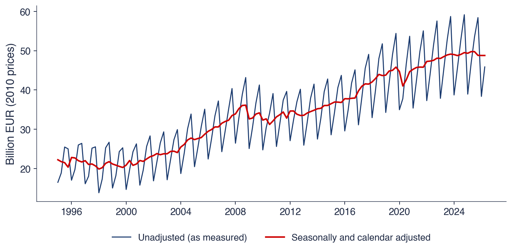
PIB-ul real al României, trimestrial, T1 1995 – T2 2026, volume înlănțuite în prețurile anului 2010, în miliarde EUR: seria măsurată (albastru) și seria ajustată sezonier și cu efectele de calendar (roșu). Trendul, sezonalitatea și recesiunile apar în același grafic.
Ce veți putea face
Recunoașteți într-un grafic trendul, sezonalitatea, ciclul și componenta neregulată și alegeți între o descompunere aditivă și una multiplicativă.
Calculați rate de creștere, o medie mobilă centrată, factori sezonieri și o autocorelație de selecție.
Construiți prognoze naive, naive sezoniere, prin netezire exponențială simplă și prin metoda Holt–Winters.
Evaluați prognozele pe un set de test, cu MAE, RMSE, MAPE și MASE.
Planul capitolului
Organizarea cursuluiProgramul, evaluarea, manualele, harta capitolelor, seminariile, proiectul de echipă și politica privind AI.
Seria de timpDefiniția, cele trei tipuri de date, obiectivele analizei, fluxurile și stocurile, datele ajustate.
Serii de timp pe date realeȘase serii, PIB, inflație, EUR/RON, indici bursieri, electricitate și CO2, citite pentru tiparele lor.
O scurtă istoriePetele solare, Yule și Slutsky, Kolmogorov și Wiener, Box și Jenkins.
Componente și descompunereTrend, sezonalitate, ciclu și componentă neregulată; medii mobile, descompunerea clasică și STL.
Notație, transformări și ACFOperatorul de întîrziere și diferențele, ratele de creștere și randamentele logaritmice, funcția de autocorelație de selecție.
Netezirea exponențialăNetezirea exponențială simplă, alegerea constantei de netezire, metodele Holt, Holt–Winters și ETS.
Prognoza și evaluarea eiMetode de referință, set de antrenare și set de test, măsuri ale erorii, competiția M4 și o mică competiție pe date românești.
InstrumenteBibliotecile Python ale cursului și un prim script.
ConcluziiIdeile principale, autoevaluarea și legătura cu Capitolul 1.
Organizarea cursului
Această secțiune descrie felul în care este construit cursul: programul de studii din care face parte, evaluarea, manualele, ordinea capitolelor, materialele disponibile pentru fiecare capitol, formatul seminariilor, proiectul de echipă și regulile de folosire a instrumentelor AI. Convențiile introduse aici, cum sînt folderele reproductibile ale graficelor și declararea utilizării AI, se aplică în toate capitolele următoare.
Capitolul este organizat în jurul a trei întrebări. Prima este ce este o serie de timp și unde o întîlnim; răspunsul constă într-o definiție, o delimitare față de alte tipuri de date și șase serii reale din economie, finanțe, energie și climă. A doua este ce tipare se repetă în astfel de date; răspunsul este descompunerea în trend, sezonalitate, ciclu și componentă neregulată. A treia este cum se prognozează o serie și de unde știm dacă prognoza este bună; răspunsul constă într-un set de metode simple de prognoză și într-un protocol de măsurare a erorilor lor pe date pe care metoda nu le-a văzut.
Partea I construiește vocabularul: organizarea cursului, exemplele, o scurtă istorie a domeniului și componentele unei serii. Partea a II-a introduce instrumentele formale: notația, transformările, funcția de autocorelație de selecție, netezirea exponențială și evaluarea prognozelor. Fiecărui rezultat al învățării de pe slide îi corespunde un calcul pe care capitolul îl face de două ori, o dată de mînă, pe cîteva numere, și o dată pe o serie reală. Seminarul 0 are loc înaintea acestui curs și exersează primele instrumente pe date; cursul explică apoi de ce funcționează aceste instrumente și cînd eșuează.
Pe scurt
Întrebări de pornire
ce este o serie de timp și unde o întîlnim?
ce tipare se repetă în datele economice, financiare, energetice și climatice?
cum prognozăm o serie și de unde știm că prognoza este bună?
Partea I
organizarea cursului
serii de timp pe date reale și o scurtă istorie
componentele: trend, sezonalitate, ciclu, zgomot
Partea a II-a
notație, transformări și o primă privire asupra ACF
netezirea exponențială; prognoze și evaluarea lor
instrumente și contribuția posibilă a AI
Rezultatele învățării: după acest capitol puteți
explica felul în care este organizat și evaluat cursul
recunoaște într-un grafic trendul, sezonalitatea, ciclul și zgomotul
calcula rate de creștere, o medie mobilă și o autocorelație de selecție
construi prognoze naive și prognoze prin netezire exponențială
evalua prognozele pe un set de test, cu MAE, RMSE și MASE
Seminarul 0 are loc înaintea acestui curs și exersează primele instrumente pe date
Serii de timp este un curs al programelor de licență Informatică economică și Cibernetică economică, în semestrul al doilea al anului III, la Facultatea de Cibernetică, Statistică și Informatică Economică (CSIE) a Academiei de Studii Economice din București (ASE). Cursul are 4 credite ECTS și este predat în anul universitar 2026/2027 de prof. Daniel Traian Pele.
Cursul presupune trei categorii de cunoștințe. Probabilitățile și statistica oferă limbajul variabilelor aleatoare, al mediilor și al testelor, pe care Capitolul 1 îl extinde de la o singură variabilă aleatoare la un șir de variabile aleatoare, adică la un proces stochastic. Econometria, în special modelul de regresie liniară, este folosită direct: multe modele de serii de timp sînt regresii ale unei variabile pe propriile valori trecute, iar cursul arată care dintre rezultatele clasice rămîn valabile cînd observațiile sînt dependente. Python este mediul de calcul al tuturor exemplelor. Site-ul cursului reunește slide-urile, seminariile, notebook-urile, Quantlet-urile și quiz-urile fiecărui capitol.
Pe scurt
Program
Licență, programele Informatică economică și Cibernetică economică, anul III, semestrul 2
Facultatea de Cibernetică, Statistică și Informatică Economică (CSIE), ASE București
4 credite ECTS; 2 ore de curs și 1 oră de seminar pe săptămînă; anul universitar 2026/2027
Nota finală are trei componente. Examenul scris reprezintă 70% și verifică trei competențe: citirea și interpretarea rezultatelor produse de programele de analiză a seriilor de timp, efectuarea unor derivări scurte și alegerea unui model potrivit pentru o serie dată. El acoperă cursurile și seminariile Capitolelor 0–10 și recapitularea din Capitolul 15. Proiectul de echipă reprezintă 20%: între doi și patru studenți analizează și prognozează serii de timp reale cu metodele cursului și prezintă lucrarea sub forma unui repository GitHub, a unui raport scurt, a unei prezentări și a unei susțineri orale. Prezența la cursuri și seminarii reprezintă restul de 10%.
Cele trei componente notate însumează 100%. Quiz-urile de autoevaluare, cîte unul pentru fiecare capitol, pe site-ul cursului, servesc exercițiului: fiecare extrage 20 de întrebări dintr-o bancă de 24 și explică fiecare răspuns. Ele arată ce părți ale unui capitol trebuie recitite înainte de examen.
Pe scurt
Examen scris: 70%
citirea și interpretarea rezultatelor obținute în Python, derivări scurte, alegerea modelului potrivit pentru o serie dată
Manualul de bază este Huang & Petukhina (2022),Applied Time Series Analysis and Forecasting with Python. Capitolele cursului urmează ordinea lui: componente și netezire, staționaritate, modele ARMA, modele ARIMA, sezonalitate, volatilitate și modele multivariate. Manualul însoțitor, gratuit, este Hyndman & Athanasopoulos (2021),Forecasting: Principles and Practice, disponibil online în ediția a treia. El este referința pentru temele acestui capitol: descompunerea, netezirea exponențială și evaluarea prognozelor.
Două cărți oferă fundamentul teoretic. Brockwell & Davis (2016) dau o introducere riguroasă, cu demonstrații, în procesele staționare, modelele ARMA și prognoză. Hamilton (1994) este referința standard a econometriei seriilor de timp, cu tratarea completă a rădăcinilor unitare, a autoregresiilor vectoriale și a cointegrării, temele capitolelor ulterioare. Manualul însoțitor arată cum se folosește o metodă; cele două cărți teoretice explică de ce funcționează.
Cursul are șaisprezece capitole. Capitolele 0–5 studiază cîte o singură serie: această introducere, procesele stochastice și staționaritatea, modelele ARMA, rădăcinile unitare și modelele ARIMA, sezonalitatea și prognoza cu SARIMA, TBATS și Prophet, volatilitatea condiționată cu ARCH și GARCH. Capitolele 6 și 7 studiază mai multe serii împreună: autoregresiile vectoriale (VAR, vector autoregression) cu cauzalitatea Granger, respectiv cointegrarea cu modelul vectorial cu corecția erorilor (VECM, vector error correction model). Capitolele 8–10 extind cadrul: memoria lungă și modelele ARFIMA, învățarea automată (machine learning) pentru serii de timp, modelele în spațiul stărilor (state space models) cu filtrul Kalman și modelele Markov switching. Capitolul 15 recapitulează materia și pregătește examenul.
Ordinea merge de la dinamica unei singure serii, întîi a mediei și apoi a varianței ei, la dinamica comună a mai multor serii. Capitolele 11–14, marcate cu asterisc, sînt de studiu individual: foundation models pentru serii de timp, analiza spectrală, bulele speculative cu modele LPPL (log-periodic power law) și modelele GARCH multivariate. Ele au materiale mai scurte și un quiz, fără seminar obligatoriu, și nu fac parte din materia examenului.
Pe scurt
Nr.
Capitol
0
Introducere: componente și netezire exponențială
1
Procese stochastice și staționaritate
2
Modele ARMA
3
Rădăcini unitare și modele ARIMA
4
Sezonalitate și prognoză: SARIMA, TBATS, Prophet
5
Volatilitate condiționată: ARCH și GARCH
6
Modele VAR și cauzalitate Granger
7
Cointegrare și VECM
Nr.
Capitol
8
Memorie lungă și ARFIMA
9
Învățare automată pentru serii de timp
10
Modele în spațiul stărilor, filtrul Kalman și modele Markov switching
11
Foundation models pentru serii de timp\(^*\)
12
Analiză spectrală\(^*\)
13
Bule speculative: modele LPPL\(^*\)
14
Modele GARCH multivariate\(^*\)
15
Recapitulare și pregătire pentru examen
Modele univariate (0–5), mai multe serii (6, 7), extensii (8–10), recapitulare (15)
Studiu individual, marcat cu \(^*\): Capitolele 11–14 (materiale mai scurte și un quiz, fără seminar obligatoriu)
Fiecare capitol are același set de materiale: slide-urile de curs și de seminar, în română și în engleză, un notebook de curs și unul de seminar, în Python, care se deschid în Google Colab cu un singur clic, și un quiz de 20 de întrebări. Notebook-urile repetă calculele din slide-uri pe aceleași date, astfel încît fiecare rezultat poate fi reprodus și modificat.
Fiecare grafic din slide-uri are un Quantlet: un folder public care conține codul ce produce graficul, un scurt fișier de descriere și graficul însuși. Pictograma de sub fiecare grafic deschide Quantlet-ul corespunzător pe GitHub. Datele provin din surse publice și sînt citite direct în cod: Eurostat, Institutul Național de Statistică (INS), Banca Națională a României (BNR) și FRED (Federal Reserve Economic Data, baza de date a Federal Reserve Bank of St. Louis). Datele zilnice de piață provin de la EODHD (EOD Historical Data) și sînt păstrate în repository-ul cursului pînă la 18 septembrie 2026, astfel încît graficele de piață pot fi reproduse exact.
Pe scurt
Pentru fiecare capitol
slide-urile de curs și de seminar, în română și în engleză
un notebook de curs și unul de seminar (Python), care se deschid în Google Colab cu un singur clic
un quiz de 20 de întrebări
Quantlets: fiecare grafic are un folder public cu codul, un fișier de descriere (Metainfo.txt) și graficul
pictograma de sub fiecare grafic deschide Quantlet-ul corespunzător pe GitHub
Date: surse publice, citite direct în cod
Eurostat, INS, BNR, FRED (Federal Reserve Bank of St. Louis)
date zilnice de piață de la EODHD (EOD Historical Data), salvate în repository-ul cursului pînă la 18 septembrie 2026
Fiecare seminar are trei părți. Partea A conține calcule scurte pe hîrtie, de exemplu o medie mobilă sau o autocorelație calculată din cîteva numere. Partea B lucrează cu date reale, iar fiecare cerință se încheie cu o întrebare de interpretare, pentru că un rezultat numeric fără interpretare nu este un răspuns. Partea C conține o idee deschisă, care poate deveni proiect, și critica unui răspuns generat de un asistent AI.
Exercițiile sînt de două tipuri. Un exercițiu rezolvat, marcat [Rezolvat], are rezolvarea completă în slide-uri și în notebook și servește drept model. Un exercițiu propus, marcat [Propus], este rezolvat de studenți, iar rezolvarea se discută la seminar. Seminarul nu se notează: are rol de exercițiu pentru examen și pentru proiect. Deoarece fiecare seminar precede cursul corespunzător, el este scris ca o introducere de sine stătătoare în instrumentele capitolului.
Pe scurt
Trei părți
A: calcule scurte pe hîrtie; B: date reale, fiecare cerință încheindu-se cu o întrebare de interpretare; C: o idee deschisă și critica unui răspuns generat de AI
Două tipuri de exerciții
[Rezolvat]: rezolvarea completă în slide-uri și în notebook, un model de urmat
[Propus]: îl rezolvați dumneavoastră; rezolvarea se discută la seminar
Seminarul nu se notează: are rol de exercițiu pentru examen și pentru proiect
Proiectul pornește de la o întrebare despre serii de timp reale, aleasă de echipă: o întrebare de prognoză, de exemplu cererea de electricitate din iarna următoare, sau o întrebare de modelare, de exemplu răspunsul inflației la cursul de schimb. Metodele sînt cele din curs: descompunerea și netezirea, ARIMA și SARIMA, GARCH, VAR sau VECM, cauzalitatea Granger, funcțiile de răspuns la impuls și evaluarea prognozei. Sînt recomandate datele românești de la INS, BNR, Eurostat și Bursa de Valori București (BVB).
Livrabilele sînt un repository GitHub al cărui cod reproduce fiecare rezultat numeric și fiecare grafic, un raport scurt, o prezentare și un fișier care declară utilizarea instrumentelor AI. Patru criterii stabilesc nota: o întrebare clară, metode corecte împreună cu diagnosticările lor, o evaluare onestă în afara eșantionului (out-of-sample) și susținerea orală, în care fiecare membru explică codul și rezultatele. O evaluare onestă în afara eșantionului înseamnă că prognozele sînt evaluate pe observații care nu au jucat niciun rol în alegerea sau în estimarea modelului; secțiunea despre evaluarea prognozelor arată cum se procedează.
Pe scurt
Întrebarea: o întrebare de prognoză sau de modelare pe serii de timp reale, aleasă de echipă
Metode: cele din curs
descompunere și netezire, ARIMA și SARIMA, GARCH, VAR sau VECM, cauzalitate Granger, funcții de răspuns la impuls, evaluarea prognozei
sînt recomandate datele românești (INS, BNR, Eurostat, BVB)
Livrabile
un repository GitHub al cărui cod reproduce fiecare rezultat numeric și fiecare grafic
un raport scurt, o prezentare și fișierul AI_USE.md
Criterii de evaluare
o întrebare clară, metode și diagnosticări corecte, o evaluare onestă în afara eșantionului
susținere orală: fiecare membru explică codul și rezultatele
Instrumentele AI sînt permise și trebuie declarate. AI (artificial intelligence, inteligență artificială) înseamnă aici asistenții construiți pe un model lingvistic de mari dimensiuni (LLM, large language model), care scriu text și cod. Fiecare utilizare se consemnează într-un fișier de declarare: instrumentul, promptul, ce s-a păstrat și ce s-a corectat. Declarația face lucrarea reproductibilă și arată unde a intervenit judecata proprie a studentului.
Studentul răspunde pentru fiecare rezultat numeric și pentru fiecare referință. Greșelile tipice ale asistenților AI sînt referințele inventate, formulele greșite și codul care rulează, dar calculează altceva decît pretinde. De aici rezultă două verificări: fiecare referință se deschide prin DOI-ul ei (Digital Object Identifier) și titlul se compară cu citarea, iar fiecare rezultat numeric se recalculează cu propriul cod. Susținerea orală aplică același principiu codului: o linie pe care studentul nu o poate explica nu este considerată munca lui. Secțiunea despre AI enumeră greșelile cele mai frecvente ale codului generat de AI pentru serii de timp.
Pe scurt
Instrumentele AI sînt permise și trebuie declarate
AI (artificial intelligence, inteligență artificială): aici, asistenți construiți pe un LLM (model lingvistic de mari dimensiuni), care scriu text și cod
fiecare utilizare se consemnează în AI_USE.md: instrumentul, promptul, ce s-a păstrat, ce s-a corectat
Răspundeți pentru fiecare rezultat numeric și pentru fiecare referință
greșeli tipice ale AI: referințe inventate, formule greșite, cod care rulează, dar calculează altceva
fiecare referință: deschideți DOI-ul (Digital Object Identifier) și verificați titlul
fiecare rezultat numeric: recalculați-l cu propriul cod
Susținerea orală
o linie de cod pe care nu o puteți explica nu este considerată muncă proprie
Sinteza secțiunii
Cursul combină un examen scris pe Capitolele 0–10 și 15 cu un proiect de echipă pe date reale și cu prezența. Materialele sînt bilingve, reproductibile și deschise: fiecare grafic are codul lui, fiecare capitol are notebook-uri și un quiz. Instrumentele AI pot fi folosite, cu condiția ca fiecare utilizare să fie declarată, iar fiecare rezultat numeric și fiecare referință să fie verificate. Secțiunea următoare definește obiectul cursului.
Seria de timp
Această secțiune definește seria de timp, fixează notația și explică prin ce se deosebesc seriile de timp de celelalte tipuri de date din statistică și econometrie. Apoi enumeră obiectivele analizei seriilor de timp și trei distincții practice care contează înaintea oricărui calcul: frecvența datelor, fluxurile față de stocuri și seriile ajustate față de cele neajustate.
O serie de timp este o mulțime de observații ale unei variabile, înregistrate în momente succesive și ordonate în timp. Ea se notează \(y_1, y_2, \ldots, y_T\), unde \(t\) este indicele de timp (un trimestru, o lună, o zi), iar \(T\) este numărul de observații. Frecvența (frequency) este numărul de observații pe an: 4 pentru date trimestriale, 12 pentru date lunare și aproximativ 252 pentru datele zilnice de piață, deoarece bursele funcționează doar în zilele lucrătoare.
Exemplul este PIB-ul real al României, în miliarde EUR, în prețurile anului 2010: 38,7 în T1 2024, 45,6 în T2, 52,8 în T3, 59,2 în T4 și 38,9 în T1 2025. Citite în ordine, cele cinci numere spun o poveste: producția crește pe parcursul anului, atinge maximul în trimestrul IV și revine la începutul anului următor aproximativ la nivelul de cu un an înainte. Amestecate, aceleași cinci numere își păstrează media și varianța, dar povestea dispare. În acest sens ordinea conține informație.
Valorile sînt exprimate în termeni reali, în prețurile anului 2010, astfel încît variațiile lor măsoară modificări de volum, nu de prețuri. În limbajul Capitolului 1, seria observată este o realizare a unui proces stochastic: \(T\) observații, dar o singură traiectorie a procesului, care nu poate fi observată de două ori.
Pe scurt
Serie de timp: observații ale unei variabile, înregistrate în momente succesive și ordonate în timp
Notație: \(y_1, y_2, \ldots, y_T\)
\(t\): indicele de timp (trimestru, lună, zi); \(T\): numărul de observații
frecvența: numărul de observații pe an (4 trimestriale, 12 lunare, aproximativ 252 pentru zilele de tranzacționare)
Exemplu: PIB-ul real al României, trimestrial, miliarde EUR în prețurile anului 2010
Datele statistice au trei structuri. Datele transversale (cross-section) observă multe unități într-un singur moment, de exemplu PIB-ul celor 27 de țări ale Uniunii Europene (UE) în 2025. O serie de timp observă o singură unitate în multe momente, de exemplu PIB-ul României în fiecare trimestru din 1995 încoace. Datele panel observă multe unități în multe momente, de exemplu PIB-ul celor 27 de țări UE în fiecare trimestru. Metodele acestui curs sînt cele ale celui de-al doilea rînd; datele panel combină ambele dimensiuni.
Particularitatea seriilor de timp este dependența dintre observații. Într-un eșantion aleator de țări, PIB-ul unei țări nu spune nimic despre următoarea țară extrasă. Într-o serie de timp, trimestrul acesta seamănă cu cel anterior. Această dependență este chiar informația folosită pentru prognoză: dacă valorile consecutive ar fi independente, trecutul nu ar conține despre viitor nimic în plus față de media generală. Ea înseamnă și că formulele clasice, obținute pentru eșantioane independente, trebuie adaptate. Eroarea standard a mediei de selecție, \(s/\sqrt{T}\), presupune observații independente; cînd observațiile sînt dependente pozitiv, \(T\) valori conțin mai puțină informație decît \(T\) valori independente, iar formula subestimează incertitudinea. Corecțiile sînt dezvoltate începînd cu Capitolul 1.
Pe scurt
Tip
Structură
Exemplu
Date transversale
multe unități, un singur moment
PIB-ul celor 27 de țări UE în 2025
Serie de timp
o unitate, multe momente
PIB-ul României, în fiecare trimestru din 1995
Date panel
multe unități, multe momente
PIB-ul celor 27 de țări UE, în fiecare trimestru
Particularitatea seriilor de timp
observațiile nu sînt independente: trimestrul acesta seamănă cu cel anterior
această dependență este chiar informația pe care o folosim pentru prognoză
formulele clasice pentru eșantioane independente (erori standard, teste) trebuie adaptate
Tabelul asociază patru domenii cu seriile lor și cu o întrebare tipică. În economie, PIB-ul, inflația și șomajul sînt urmărite de guverne și de băncile centrale, iar o întrebare tipică este unde va fi inflația peste un an. În finanțe, obiectul de studiu sînt cursurile de schimb, indicii bursieri și dobînzile, iar o întrebare tipică este cît de riscant va fi indicele BET mîine. În energie, producția și consumul de electricitate și prețurile ei sînt planificate cu luni înainte. În științele climei, concentrația de CO2 și temperaturile sînt măsurate pentru a separa creșterea pe termen lung de oscilația sezonieră.
Întrebările sînt de naturi diferite. Unele cer nivelul unei variabile la un anumit orizont, altele riscul ei, altele o cantitate care trebuie planificată, iar altele un trend ascuns sub un tipar sezonier. Le este comun faptul că deciziile depind de răspuns. Banca centrală stabilește dobînda pe baza prognozei inflației, pentru că politica monetară acționează cu întîrziere; operatorul de rețea planifică producția pe baza prognozei cererii, pentru că electricitatea nu poate fi stocată ieftin la scară mare. O prognoză deplasată duce la o decizie greșită chiar dacă modelul descrie bine trecutul.
Pe scurt
Domeniu
Serie
Întrebare tipică
Economie
PIB, inflație, șomaj
Unde va fi inflația peste un an?
Finanțe
cursuri de schimb, indici bursieri, dobînzi
Cît de riscant este BET mîine?
Energie
producția și consumul de electricitate, prețuri
De cîtă electricitate este nevoie în ianuarie viitor?
Climă
concentrația de CO2, temperaturi
Cît de repede crește CO2, dincolo de oscilația sezonieră?
Deciziile depind de prognoze: banca centrală stabilește dobînda pe baza prognozei inflației; operatorul de rețea planifică producția pe baza prognozei cererii
Analiza seriilor de timp urmărește patru obiective. Descrierea rezumă o serie prin trend, sezonalitate, cicluri și observații neobișnuite, cu ajutorul graficelor, al descompunerii și al autocorelațiilor; ea este tema acestui capitol și a Capitolului 1. Modelarea propune un model probabilist care ar fi putut genera datele, de exemplu modelele ARMA, ARIMA și GARCH din Capitolele 2–5. Un model transformă o descriere într-o afirmație despre incertitudine: spune nu doar ce a făcut seria, ci și cum s-ar fi putut comporta.
Prognoza estimează valori încă neobservate, împreună cu incertitudinea lor, și este obiectivul care străbate întregul curs. Explicarea și controlul studiază cum răspunde o serie la modificarea alteia, de exemplu cum răspunde inflația la o modificare a dobînzii, cu modele VAR, cauzalitate Granger și cointegrare, în Capitolele 6 și 7. Box & Jenkins (1970) au formulat aceleași obiective ca un ciclu de patru etape aplicat unei singure serii: identificarea unui model, estimarea lui, verificarea lui și prognoza cu ajutorul lui.
Un flux (flow) se măsoară pe o perioadă; un stoc (stock) se măsoară la un moment. PIB-ul unui trimestru și electricitatea produsă într-o lună sînt fluxuri: se acumulează pe parcursul perioadei, iar fluxul unui an este suma fluxurilor trimestrelor lui. Cursul de schimb dintr-o anumită zi, concentrația de CO2 și nivelul unui indice bursier sînt stocuri: descriu o stare la un moment dat, iar adunarea lor în timp nu are sens.
Distincția stabilește cum se schimbă frecvența unei serii. La trecerea de la date lunare la date trimestriale, fluxurile se adună, iar stocurile se mediază sau sînt reprezentate prin ultima valoare. Seria lunară EUR/RON folosită mai departe în capitol este media cursurilor zilnice din fiecare lună.
Institutele de statistică publică multe serii în două variante. Seria ajustată sezonier (seasonally adjusted) elimină tiparul regulat din interiorul anului și efectele de calendar, cum este numărul de zile lucrătoare dintr-un trimestru. Seria neajustată este cea măsurată; seria ajustată este o estimare, revizuită cînd apar observații noi și tiparul sezonier este reestimat. Pentru PIB-ul României din T2 2026, valoarea neajustată este 45,9 miliarde EUR, iar cea ajustată 48,8 miliarde EUR: trimestrul al doilea este slab din punct de vedere sezonier, deci ajustarea îl ridică. Un model al tiparului sezonier însuși are nevoie de seria neajustată.
Pe scurt
Flux: măsurat pe o perioadă; stoc: măsurat la un moment
fluxuri: PIB-ul unui trimestru, electricitatea produsă într-o lună; se adună în timp
stocuri: cursul de schimb dintr-o zi, concentrația de CO2, nivelul unui indice; le mediem, nu le adunăm
Schimbarea frecvenței
din lunar în trimestrial: suma pentru fluxuri, media sau ultima valoare pentru stocuri
Date ajustate sezonier
institutul de statistică elimină tiparul regulat din interiorul anului și efectele de calendar (numărul de zile lucrătoare)
seria neajustată este cea măsurată; seria ajustată este o estimare, revizuită cînd apar date noi
Capitolul folosește șase serii, alese astfel încît fiecare să prezinte o altă combinație de tipare. PIB-ul real al României provine de la Eurostat, trimestrial, din T1 1995 pînă în T2 2026. Indicele armonizat al prețurilor de consum (IAPC, în engleză HICP, Harmonised Index of Consumer Prices) al României, calculat cu aceeași metodă în toate țările UE, provine de la Eurostat, lunar, din 1996 pînă în august 2026. Producția de electricitate a României provine de la Eurostat, lunar, din ianuarie 2008 pînă în iulie 2026. Cursul EUR/RON este cursul de referință zilnic al BNR, din 2005 pînă în 2026.
Cei doi indici bursieri sînt zilnici, din 2000 pînă în 2026: BET, indicele de referință al Bursei de Valori București (BVB), și S&P 500, care acoperă 500 de companii mari din Statele Unite. Concentrația de CO2 de la Mauna Loa este setul de date clasic distribuit împreună cu statsmodels, biblioteca Python de modele statistice folosită pe tot parcursul cursului; măsurătorile săptămînale sînt mediate pe luni, din 1958 pînă în 2001. Sursele sînt publice, deci fiecare rezultat numeric din capitol poate fi recalculat.
Pe scurt
Serie
Sursă
Frecvență
Eșantion
PIB-ul real al României
Eurostat
trimestrial
T1 1995 – T2 2026
IAPC, prețurile de consum
Eurostat
lunar
1996 – august 2026
Producția de electricitate, România
Eurostat
lunar
ianuarie 2008 – iulie 2026
EUR/RON
cursul de referință BNR
zilnic
2005 – 2026
BET, S&P 500
EODHD
zilnic
2000 – 2026
CO2 la Mauna Loa
setul de date statsmodels
săptămînal, mediat lunar
1958 – 2001
IAPC: indicele armonizat al prețurilor de consum (HICP, Harmonised Index of Consumer Prices), calculat cu aceeași metodă în toate țările UE
BET: indicele de referință al BVB; S&P 500: 500 de companii mari din SUA
statsmodels: biblioteca Python de modele statistice folosită pe tot parcursul cursului
O serie de timp este o variabilă observată în timp, iar ordinea observațiilor ei conține informație. Observațiile consecutive depind unele de altele, iar această dependență este atît baza prognozei, cît și motivul pentru care formulele valabile pentru eșantioane independente trebuie adaptate.
Analiza seriilor de timp descrie, modelează, prognozează și explică. Înaintea oricărui calcul trebuie lămurite trei aspecte ale datelor: frecvența, dacă variabila este un flux, care se adună în timp, sau un stoc, care se mediază, și dacă seria este cea măsurată sau o estimare ajustată sezonier.
Pe scurt
O serie de timp este o variabilă observată în timp; ordinea observațiilor conține informație
Observațiile consecutive depind unele de altele: pe acest fapt se sprijină prognoza
Fluxurile se adună, stocurile se mediază; seriile ajustate sînt estimări
Sinteza secțiunii
O serie de timp se deosebește de datele transversale prin dependența dintre observații, care face posibilă prognoza și modifică inferența. Frecvența, natura de flux sau de stoc și statutul de serie ajustată sau neajustată stabilesc cum poate fi agregată și modelată. Secțiunea următoare citește șase serii reale și identifică tiparele pe care restul capitolului le formalizează.
Serii de timp pe date reale
Această secțiune citește șase serii reale, de la PIB-ul României pînă la concentrația de CO2 din atmosferă. Fiecare serie este prezentată într-un grafic, iar slide-ul următor interpretează graficul: ce tipare sînt prezente, cît de mari sînt și ce evenimente explică observațiile neobișnuite. Cele șase lecturi pregătesc vocabularul secțiunii despre componente: trend, sezonalitate, ciclu și zgomot.
Graficul prezintă PIB-ul real al României în fiecare trimestru, din T1 1995 pînă în T2 2026, în miliarde EUR. Valorile sînt volume înlănțuite (chain-linked volumes) în prețurile anului 2010: creșterea fiecărui an se calculează în prețurile anului precedent, iar ratele de creștere sînt înlănțuite într-un singur indice, exprimat în prețurile anului 2010. Variațiile seriei măsoară, așadar, modificări ale producției, nu ale prețurilor.
În grafic apar două linii. Linia albastră este seria măsurată, care face un zigzag în fiecare an. Linia roșie este seria ajustată de Eurostat pentru efectele sezoniere și de calendar; ea trece prin mijlocul zigzagului și arată evoluția de fond. Distanța verticală dintre cele două linii într-un trimestru este efectul sezonier al acelui trimestru.
Pe scurt
Trimestrial, T1 1995 – T2 2026, volume înlănțuite în prețurile anului 2010 (miliarde EUR); albastru: seria măsurată; roșu: seria ajustată sezonier și cu efectele de calendar (Eurostat)
Trendul (trend) este trăsătura dominantă: economia României a crescut de aproximativ 2,3 ori din 1995 pînă în 2025, o creștere reală medie de 2,8% pe an. Cele două numere sînt legate prin compunere, deoarece o creștere de 2,8% pe an timp de treizeci de ani înmulțește nivelul cu \(1{,}028^{30} \approx 2{,}3\).
Tiparul sezonier este la fel de clar: în fiecare an, trimestrul I se află mult sub trimestrul IV. Iarna înseamnă mai puține construcții și lucrări agricole, iar toamna aduce recolta și activitatea de la sfîrșitul anului. Oscilația crește odată cu nivelul PIB: în 2024, trimestrul IV a depășit trimestrul I cu aproximativ 20 de miliarde EUR (59,2 față de 38,7), iar cum efectele sezoniere sînt procente din nivel, diferența în miliarde EUR era mai mică atunci cînd economia era mai mică. O oscilație proporțională cu nivelul este semnul unui tipar multiplicativ, pe care secțiunea despre componente îl estimează.
Recesiunile întrerup trendul la date neregulate: PIB-ul anual a scăzut cu 5,5% în 2009, în timpul crizei financiare globale, și cu 3,6% în 2020, în timpul pandemiei de COVID-19. Acestea sînt mișcările ciclice ale seriei. Ultima observație, din T2 2026, este de 45,9 miliarde EUR neajustat și de 48,8 miliarde EUR ajustat.
Pe scurt
Trend: economia a crescut de aproximativ 2,3 ori din 1995 pînă în 2025
o creștere reală medie de 2,8% pe an
Sezonalitate: în fiecare an, trimestrul I este mult sub trimestrul IV
iarna: mai puține construcții și lucrări agricole; toamna: recolta și activitatea de la sfîrșit de an
oscilația crește odată cu nivelul PIB: un tipar multiplicativ
Ciclu: recesiunile întrerup trendul
PIB-ul anual a scăzut cu 5,5% în 2009 (criza financiară globală) și cu 3,6% în 2020 (pandemia de COVID-19)
Ultima valoare, T2 2026: 45,9 miliarde EUR neajustat, 48,8 ajustat
Panoul din stînga prezintă IAPC, cu 2015 = 100, pe o scară logaritmică. Pe o asemenea scară, distanțele verticale egale corespund unor modificări procentuale egale, deci panta liniei este rata inflației: o linie abruptă înseamnă inflație rapidă, o linie aproape orizontală înseamnă prețuri stabile. Panoul din dreapta prezintă rata anuală a inflației din 2005,
unde \(P_t\) este IAPC în luna \(t\), împreună cu ținta de inflație a BNR, de 2,5%.
Cele două panouri sînt două transformări ale acelorași date. Indicele este nivelul prețurilor, iar rata este variația lui procentuală pe douăsprezece luni. Cea mai mare parte a analizei din capitolele următoare se face pe astfel de serii transformate, pentru că rata are o medie stabilă, iar nivelul nu.
Pe scurt
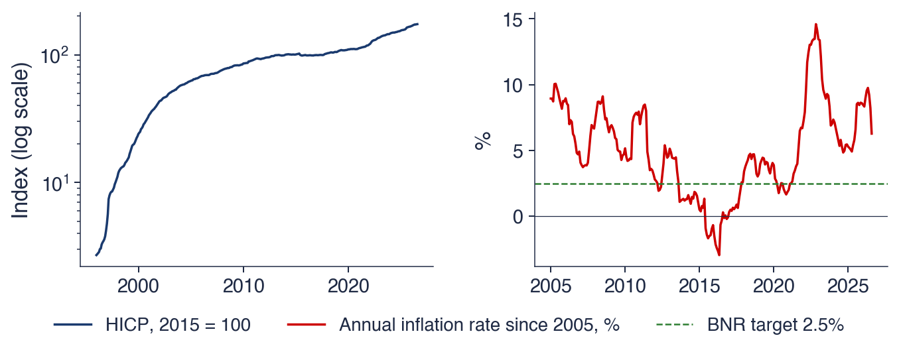
Stînga: IAPC, 2015 = 100, scară logaritmică; dreapta: rata anuală a inflației \(100\,(P_t/P_{t-12} - 1)\) din 2005, față de ținta BNR de 2,5%; \(P_t\): IAPC în luna \(t\)
Nivelul și rata oferă informații diferite. Indicele prețurilor aproape nu scade niciodată, deci trendul lui este inflația acumulată de la anul de bază. Rata inflației crește și scade și este seria pe care o țintește banca centrală. Patru episoade marchează istoria ratei: 178% în iunie 1997, după liberalizarea prețurilor din acel an; −3,0% în mai 2016, după reducerile taxei pe valoarea adăugată (TVA) din 2015 și 2016; 14,6% în noiembrie 2022, în timpul șocului prețurilor la energie; și 6,3% în august 2026, ultima observație.
Rata negativă din 2016 arată că o modificare a unui impozit poate deplasa rata măsurată a inflației exact pentru douăsprezece luni: nivelul mai mic al prețurilor intră imediat la numărătorul raportului \(P_t/P_{t-12}\) și iese din comparație după un an. Același mecanism explică de ce o rată calculată pe 12 luni elimină tiparul sezonier, dar reacționează cu întîrziere. Compararea fiecărei luni cu aceeași lună din anul anterior anulează mișcările regulate din interiorul anului, dar rata reflectă întregul an trecut, astfel încît o schimbare a trendului prețurilor apare în ea doar treptat.
Pe scurt
Nivelul și rata oferă informații diferite
indicele prețurilor aproape nu scade niciodată: trendul lui este inflația acumulată
rata inflației crește și scade: este seria pe care o țintește banca centrală
Episoade
iunie 1997: 178%, după liberalizarea prețurilor din 1997
mai 2016: \(-\)3,0%, după reducerile de TVA din 2015–2016
noiembrie 2022: 14,6%, șocul prețurilor la energie
august 2026: 6,3%
O rată calculată pe 12 luni elimină tiparul sezonier, dar reacționează cu întîrziere: reflectă întregul an trecut
Graficul prezintă numărul de lei plătiți pentru un euro, conform cursului de referință zilnic al BNR, în fiecare zi lucrătoare de la 4 iulie 2005 pînă la 18 septembrie 2026, în total 5 353 de observații. Cursul de referință se stabilește o dată pe zi, pe baza cotațiilor de pe piața interbancară, deci seria este un stoc: valoarea la un moment, nu suma pe o perioadă.
Seria nu are zigzagul sezonier al PIB-ului sau al electricității. Evoluția ei constă din perioade lungi în care cursul se modifică puțin, întrerupte de episoade scurte de depreciere rapidă a leului. Slide-ul de interpretare le cuantifică pe amîndouă.
Pe scurt
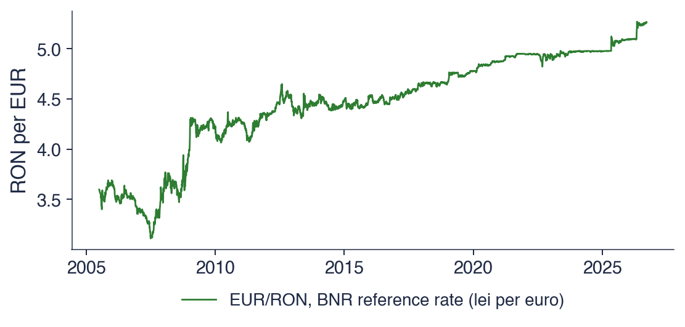
Lei pentru un euro, în fiecare zi lucrătoare de la 4 iulie 2005 la 18 septembrie 2026 (5 353 de observații)
Cursul a crescut de la 3,5986 lei la începutul eșantionului la 5,2644 lei la sfîrșit, cu un minim de 3,1112 lei pe 2 iulie 2007. Creșterea nu a urmat o formă fixă, de exemplu o dreaptă: perioade lungi de calm alternează cu salturi, în toamna lui 2008, în 2012 și în 2025. Un trend de acest tip, format prin acumularea unor șocuri care nu se mai inversează, se numește trend stochastic (stochastic trend) și este tema Capitolelor 1 și 3.
Seria nu are sezonalitate, iar un argument legat de comportamentul pieței explică de ce. Dacă euro ar fi, previzibil, mai ieftin în fiecare primăvară, participanții la piață l-ar cumpăra primăvara și l-ar vinde mai tîrziu în cursul anului; cumpărările lor ar ridica prețul de primăvară pînă la dispariția tiparului. Tiparele previzibile din prețurile activelor tranzacționate liber tind să fie eliminate chiar de tranzacțiile pe care le stimulează.
Variațiile zilnice sînt mici: abaterea standard a variației logaritmice zilnice este de 0,28%. Cea mai mare variație, de 2,93%, pe 3 octombrie 2008, reprezintă aproximativ zece abateri standard, un eveniment pe care o distribuție Normală cu aceeași abatere standard practic nu l-ar produce niciodată. Asemenea variații mari și rare sînt tipice seriilor financiare și revin în Capitolul 5.
Pe scurt
Un trend fără o formă fixă
de la 3,5986 la 5,2644 lei; valoarea minimă 3,1112 pe 2 iulie 2007
perioade lungi de calm, întrerupte de salturi (toamna lui 2008, 2012, 2025)
Fără sezonalitate
dacă euro ar fi, previzibil, mai ieftin în fiecare primăvară, participanții la piață l-ar cumpăra primăvara și tiparul ar dispărea
Variațiile zilnice
abaterea standard a variației logaritmice zilnice: 0,28%; cea mai mare variație: 2,93% pe 3 octombrie 2008
Un astfel de trend, format din șocuri acumulate, se numește trend stochastic (Capitolele 1 și 3)
Graficul prezintă valoarea a 100 de unități investite pe 5 ianuarie 2000 în fiecare dintre cei doi indici, calculată din prețurile de închidere. Axa verticală este logaritmică, deci distanțele verticale egale sînt modificări procentuale egale: o scădere de la 200 la 100 și o scădere de la 2 000 la 1 000 au aceeași înălțime.
Aducerea ambilor indici la valoarea 100 în aceeași zi face traiectoriile comparabile, deși nivelurile lor diferă cu ordine de mărime. Graficul răspunde la o întrebare simplă: ce s-a întîmplat cu aceeași sumă investită la începutul anului 2000 pe piața de acțiuni din România și pe cea din Statele Unite.
Pe scurt
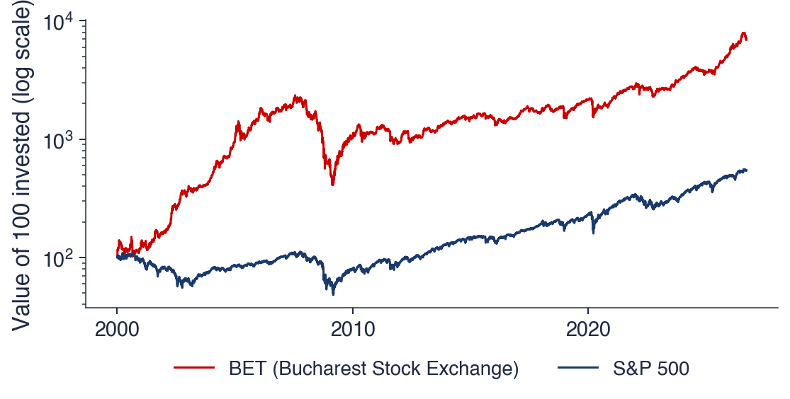
Valoarea a 100 de unități investite pe 5 ianuarie 2000, prețuri de închidere, scară logaritmică: distanțele verticale egale sînt modificări procentuale egale
Ambii indici au crescut pe termen lung, cu scăderi adînci. O sumă investită în BET s-a înmulțit de aproximativ 71 de ori, iar una investită în S&P 500 de aproximativ 5,5 ori. Ambii sînt indici de preț, fără dividende, deci randamentul total al unui investitor a fost mai mare. În 2008 și 2009, BET a pierdut mai mult de trei sferturi din valoare; o pierdere de 75% cere o creștere de 300% pentru revenirea la nivelul anterior, de aceea revenirea a durat ani.
Scara logaritmică este necesară pentru o astfel de serie. Pe o scară liniară, primii ani par plați, iar variațiile recente par uriașe, pentru că o modificare de 10% este de zece ori mai mare în puncte de indice atunci cînd indicele este de zece ori mai mare. Logaritmul transformă o creștere procentuală constantă într-o dreaptă, astfel încît panta graficului poate fi citită ca rată de creștere în orice perioadă.
Prețurile activelor tranzacționate se prognozează greu, din același motiv ca în cazul cursului de schimb: variațiile previzibile ale prețului sînt eliminate prin tranzacționare. Riscul lor, adică mărimea variațiilor viitoare indiferent de semn, se prognozează mult mai ușor, așa cum arată Capitolul 5 cu modelele GARCH.
Pe scurt
Creștere pe termen lung, cu scăderi adînci
100 de unități investite s-au înmulțit de aproximativ 71 de ori în BET și de 5,5 ori în S&P 500 (indici de preț, fără dividende)
2008–2009: BET a pierdut mai mult de trei sferturi din valoare; revenirea a durat ani
Rolul scării logaritmice
pe o scară liniară, primii ani par plați, iar variațiile recente par uriașe
logaritmul transformă o creștere procentuală constantă într-o dreaptă
Prețurile activelor tranzacționate se prognozează greu; riscul lor se prognozează mai ușor (Capitolul 5)
Graficul prezintă producția netă de electricitate a României, în TWh pe lună, din ianuarie 2008 pînă în iulie 2026, conform Eurostat. Producția netă este electricitatea livrată de centrale după scăderea consumului lor propriu. Punctele marchează luna ianuarie a fiecărui an, astfel încît vîrful sezonier poate fi urmărit de la o iarnă la alta.
Seria este un flux: producția unui an este suma producțiilor lunare. Trei trăsături se văd imediat: o undă anuală regulată, un nivel care coboară pe parcursul eșantionului și ani în care unda este mai înaltă sau mai joasă decît de obicei.
Pe scurt
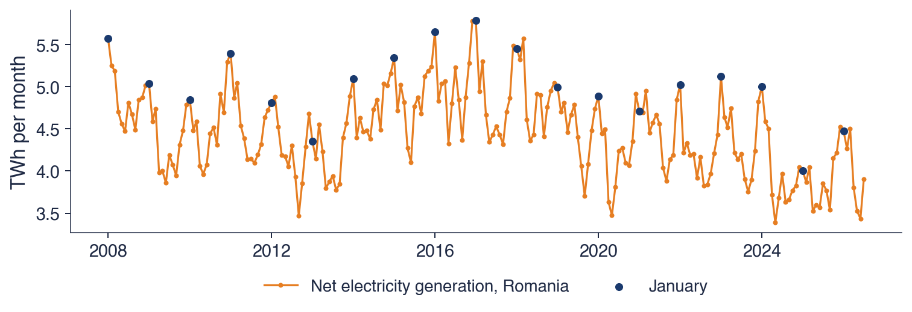
Producția netă de electricitate, TWh pe lună, ianuarie 2008 – iulie 2026 (Eurostat); puncte: luna ianuarie a fiecărui an
Sezonalitatea (seasonality) este puternică. Luna cu cea mai mare producție medie este ianuarie, cu 5,03 TWh, iar luna cu cea mai mică este septembrie, cu 4,06 TWh; raportul celor două medii este 1,24, deci o lună ianuarie tipică produce cu aproximativ un sfert mai mult decît o lună septembrie tipică. Cauza este cererea de iarnă pentru încălzire și iluminat.
Nivelul scade pe parcursul eșantionului: producția anuală a fost de 58,5 TWh în 2008 și de 46,7 TWh în 2025. Importurile mai mari și cererea industrială mai mică explică scăderea. O metodă de prognoză pentru această serie trebuie, așadar, să combine un nivel în scădere cu un vîrf de iarnă stabil, ceea ce face metoda Holt–Winters din secțiunea despre netezire.
Unii ani sînt atipici: anii secetoși reduc producția hidro, iar iernile blînde reduc cererea. Aceste abateri nu se repetă cu o perioadă fixă și formează componenta neregulată a seriei. Unitățile de măsură sînt terawatt-ora, TWh, egală cu \(10^{12}\) wați-oră, și gigawatt-ora, GWh, egală cu \(10^{9}\) wați-oră.
Pe scurt
Sezonalitate puternică
luna cu media cea mai mare: ianuarie (5,03 TWh); cea mai mică: septembrie (4,06 TWh)
cererea de iarnă pentru încălzire și iluminat; raportul celor două medii este 1,24
Un nivel în scădere
58,5 TWh în 2008, 46,7 TWh în 2025: mai multe importuri, o cerere industrială mai mică
Ani atipici
anii secetoși reduc producția hidro; iernile blînde reduc cererea
În 1958, Charles David Keeling a început măsurarea concentrației de CO2 (dioxid de carbon) la Mauna Loa, în Hawaii, un loc aflat departe de sursele locale de poluare (Keeling, 1960). Măsurătorile au continuat de atunci și formează cea mai lungă serie continuă de măsurători ale CO2 din atmosferă. Unitatea de măsură este ppm (parts per million): molecule de CO2 la un milion de molecule de aer uscat.
Seria conține două tipare. Trendul crește deoarece emisiile din combustibilii fosili se acumulează în atmosferă. Unda anuală provine de la vegetația din emisfera nordică, unde se află cea mai mare parte a uscatului: plantele absorb CO2 vara, prin fotosinteză, și îl eliberează iarna, cînd frunzele se descompun. Curba Keeling este exemplul de manual al unei serii în care trendul și sezonalitatea sînt amîndouă clare și aproape lipsite de zgomot.
Pe scurt
1958: Charles David Keeling începe măsurarea CO2 la Mauna Loa, Hawaii, departe de surse locale (Keeling (1960))
cea mai lungă serie continuă de măsurători ale CO2 din atmosferă
Două tipare într-o singură serie
un trend crescător: emisiile din combustibili fosili se acumulează
o undă anuală: plantele din emisfera nordică absorb CO2 vara și îl eliberează iarna
ppm (parts per million): molecule de CO2 la un milion de molecule de aer uscat
Graficul prezintă mediile lunare ale măsurătorilor săptămînale din martie 1958 pînă în decembrie 2001, în total 526 de luni. Acesta este setul de date clasic distribuit împreună cu statsmodels, care se încheie în 2001; cele patru decenii ale lui sînt suficient de lungi pentru a arăta cum evoluează atît trendul, cît și unda sezonieră.
Graficul se citește la două scări deodată. Pe parcursul deceniilor, linia urcă constant. În interiorul fiecărui an, o undă regulată urcă și coboară. Secțiunea despre componente le separă cu metoda STL.
Pe scurt
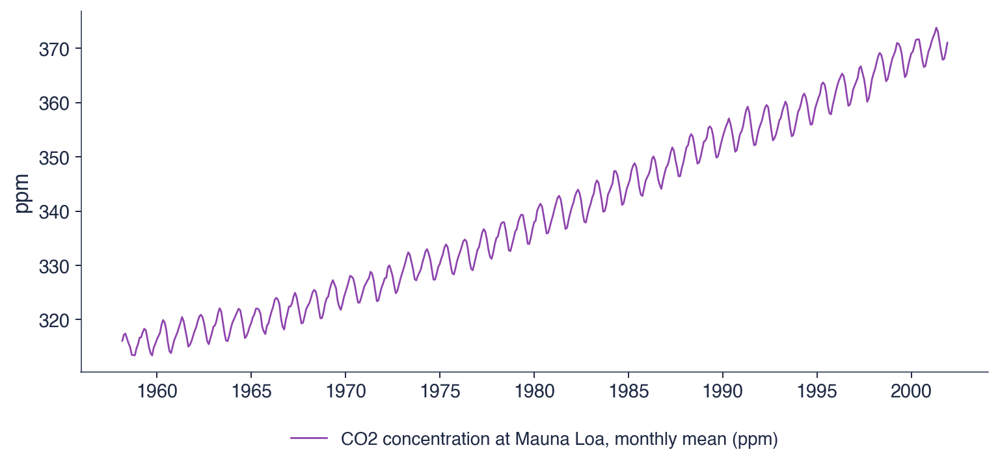
Mediile lunare ale măsurătorilor săptămînale, martie 1958 – decembrie 2001 (526 de luni; setul de date clasic din statsmodels)
Trendul crește de la 316,1 ppm în martie 1958 la 371,0 ppm în decembrie 2001, în medie cu 1,26 ppm pe an. Panta însăși crește în timp: curba se încovoaie în sus, deci concentrația crește mai repede la sfîrșitul eșantionului decît la început. O dreaptă ajustată pe întregul eșantion ar subestima panta recentă.
Unda sezonieră este regulată și are o mărime de cîțiva ppm. Ea își păstrează aproximativ mărimea în timp ce nivelul crește, ceea ce este semnul unui tipar aditiv, spre deosebire de PIB. Seria aproape nu are zgomot, pentru că este o măsurătoare fizică atentă, nu o statistică economică obținută din anchete sau un preț format prin tranzacționare. O serie netedă, cu trend și sezonalitate clare, este cazul cel mai simplu pentru descompunere și netezire, de aceea seria CO2 este cazul de referință în restul capitolului.
Pe scurt
Trend: de la 316,1 la 371,0 ppm
în medie 1,26 ppm pe an; panta însăși crește în timp
Sezonalitate: o undă anuală regulată, de cîțiva ppm
unda își păstrează aproximativ mărimea în timp ce nivelul crește: un tipar aditiv
Aproape fără zgomot
o măsurătoare fizică atentă, spre deosebire de PIB sau de cursul de schimb
O serie netedă, cu trend și sezonalitate clare: cazul cel mai simplu pentru descompunere și netezire
Tabelul rezumă cele șase lecturi după cele patru componente. PIB-ul neajustat are un trend crescător, o sezonalitate puternică și multiplicativă, cicluri sub forma recesiunilor și zgomot mic. Rata inflației scade după 1997, sezonalitatea ei este eliminată de rata pe 12 luni, ciclurile ei sînt șocuri, iar zgomotul este mediu. EUR/RON are un trend stochastic, nu are sezonalitate și nici ciclu, iar zgomotul este mediu. BET crește, cu prăbușiri, nu are sezonalitate, are perioade de avînt și de prăbușire, iar zgomotul este mare. Electricitatea scade, are un vîrf puternic iarna și zgomot mediu. CO2 crește într-un ritm accelerat, cu o sezonalitate regulată, aditivă, și zgomot foarte mic.
Întrebare pentru sală. Care dintre aceste serii ați prognoza-o cel mai precis cu un an înainte? Răspuns. CO2, pentru că trendul ei este neted, sezonalitatea stabilă, iar zgomotul mic; BET este cea mai grea, pentru că nu are nici o sezonalitate care să se repete, nici un trend care să poată fi extrapolat, iar zgomotul ei este mare. Clasamentul anticipează rezultatele secțiunii despre evaluarea prognozelor, în care metoda Holt–Winters prognozează seria CO2 cu un MASE de 0,26, cea mai mică eroare din capitol.
Pe scurt
Serie
Trend
Sezonalitate
Ciclu
Zgomot
PIB (neajustat)
crescător
puternică, multiplicativă
recesiuni
mic
Rata inflației
descrescător după 1997
eliminată de rata pe 12 luni
șocuri
mediu
EUR/RON
stochastic
–
–
mediu
BET
crescător, cu prăbușiri
–
avînturi și prăbușiri
mare
Electricitate
descrescător
puternică, vîrf iarna
–
mediu
CO2
crescător, accelerat
regulată, aditivă
–
foarte mic
Întrebare pentru sală: care dintre aceste serii ați prognoza-o cel mai precis cu un an înainte?
Răspuns: CO2: un trend neted și o sezonalitate stabilă, puțin zgomot; BET este cea mai grea: fără sezonalitate și cu zgomot mare
Sinteza secțiunii
Cele șase serii prezintă cele patru componente în proporții diferite. PIB-ul și electricitatea sînt dominate de trend și de sezonalitate; EUR/RON și BET, de șocuri acumulate, fără sezonalitate; CO2, de un trend neted și de o undă regulată; rata inflației, de episoade. Oscilațiile sezoniere pot fi proporționale cu nivelul, ca la PIB, sau constante, ca la CO2. Secțiunea următoare arată cum au fost găsite primele modele ale unor astfel de valuri.
O scurtă istorie
Metodele analizei seriilor de timp s-au dezvoltat din cîteva probleme, fiecare rezolvată de o persoană al cărei nume este legat și astăzi de un model. Această secțiune le urmărește de la numerele de pete solare din secolul al XIX-lea pînă la metoda lui Box și Jenkins din 1970 și așază dezvoltările ulterioare pe o singură axă a timpului. Istoria nu este un ornament: fiecare etapă a introdus o idee pe care cursul o folosește direct.
În 1848, astronomul elvețian Rudolf Wolf a definit un indice zilnic al activității solare, pe baza numărului de pete solare, și l-a reconstituit pînă în 1749. Acestea sînt numerele Wolf, continuate ulterior de succesorul lui, Alfred Wolfer. Desenul lui Richard Carrington din 1 septembrie 1859 arată tipul de observație din care se construiește indicele.
Seria crește și scade în valuri de aproximativ 11 ani, dar nici lungimea, nici înălțimea valurilor nu sînt constante. De aici a pornit întrebarea care a modelat începuturile domeniului: este seria un semnal periodic ascuns, o sumă de sinusoide, peste care se suprapune zgomotul de măsurare, sau este produsă de un alt mecanism? Dacă ar fi o sumă de sinusoide, perioada ar fi fixă și valurile ar putea fi prognozate cu mult timp înainte; variația perioadei în date contrazice această ipoteză.
Yule (1926) a studiat ceea ce a numit corelații fără sens (nonsense correlations) între serii de timp. Două serii fără nicio legătură cauzală, dar cu trend, pot avea o corelație apropiată de 1, doar pentru că amîndouă cresc sau scad pe parcursul eșantionului. Exemplul lui a fost ponderea căsătoriilor oficiate de Biserica Angliei și rata mortalității în Anglia și Țara Galilor, care au evoluat împreună timp de decenii. Problema reapare în Capitolul 3 ca regresie falsă (spurious regression) și în Capitolul 7, unde cointegrarea deosebește o relație reală pe termen lung de o coincidență a trendurilor.
Yule (1927) a explicat numerele de pete solare ale lui Wolfer prin propriul lor trecut, în locul unor sinusoide ascunse:
unde \(y_t\) este numărul de pete solare din anul \(t\),\(\phi_1\) și \(\phi_2\) sînt coeficienți estimați din date, iar \(\varepsilon_t\) sînt perturbații aleatoare. Fără perturbații, pentru coeficienți potriviți, ecuația oscilează sub forma unui val amortizat, a cărui lungime și amortizare sînt fixate de \(\phi_1\) și \(\phi_2\). Cu perturbații, fiecare șoc împinge valul și îi deplasează faza, deci perioada variază, ca în date. Acesta a fost primul model autoregresiv, AR(2), studiat în Capitolul 2.
Pe scurt
1926: corelațiile fără sens dintre seriile de timp (Yule (1926))
două serii fără nicio legătură, dar cu trend, pot avea o corelație apropiată de 1
exemplul lui: ponderea căsătoriilor oficiate de Biserica Angliei și rata mortalității în Anglia și Țara Galilor
Eugen Slutsky și-a publicat lucrarea la Moscova în 1927; versiunea în engleză a apărut zece ani mai tîrziu, cu titlul The summation of random causes as the source of cyclic processes(Slutzky, 1937). Experimentul lui pornește de la numere aleatoare independente \(\varepsilon_1, \varepsilon_2, \ldots\), luate din cifrele unei extrageri la loterie, și înlocuiește fiecare număr cu suma ultimelor zece:
Seria rezultată seamănă cu ciclurile economice din statisticile vremii, cu expansiuni și contracții de lungime neregulată. În termeni actuali, \(y_t\) este un proces de medie mobilă de ordinul 9, MA(9), una dintre cele două componente de bază ale modelelor din Capitolul 2. Yule a găsit valuri într-o serie care depinde de propriul trecut; Slutsky le-a găsit într-o serie care depinde de șocurile trecute.
Graficul repetă experimentul cu ajutorul calculatorului. Panoul de sus prezintă 240 de șocuri independente, extrase din distribuția Normală standard: o serie fără nicio structură, în care fiecare valoare nu are legătură cu celelalte. Panoul de jos prezintă suma mobilă a cîte 10 șocuri consecutive, calculată exact ca în construcția lui Slutsky.
Contrastul dintre cele două panouri este chiar ideea experimentului. Panoul de sus sare haotic în jurul lui zero. Panoul de jos evoluează în valuri netede, care rămîn deasupra sau dedesubtul lui zero multe perioade la rînd, deși în el nu s-a introdus nimic periodic. Singura operație dintre cele două panouri este o însumare.
Pe scurt
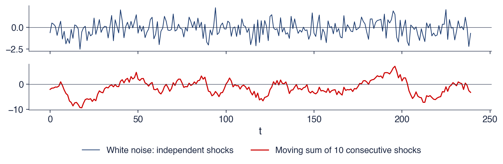
Sus: 240 de șocuri independente, cu distribuția Normală standard; jos: suma mobilă a cîte 10 șocuri consecutive
Nu s-a introdus niciun ciclu, totuși apar valuri. Suma mobilă traversează zero în sus de 16 ori în 240 de perioade, deci valul mediu durează aproximativ 15 perioade, dar valurile individuale au lungimi neregulate. Motivul este suprapunerea dintre valorile vecine: \(y_t\) și \(y_{t-1}\) au în comun 9 din cele 10 șocuri. Dacă șocurile au varianța \(\sigma^2\), covarianța dintre \(y_t\) și \(y_{t-k}\) este \((10-k)\sigma^2\) pentru \(k < 10\) și zero după aceea, deci autocorelația este
\[\rho_k = \frac{10-k}{10}, \qquad k = 0, 1, \ldots, 9,\]
egală cu 0,9 la lagul 1 și descrescătoare liniar pînă la zero la lagul 10. Corelația puternică dintre valorile vecine face ca seria să se miște lent, iar mișcările lente în jurul lui zero arată ca niște valuri.
Experimentul oferă două lecții. Un ciclu într-un grafic nu dovedește existența unei cauze periodice: și șocurile însumate produc cicluri. Netezirea cu medii mobile, instrumentul din secțiunea despre componente, poate ea însăși să creeze cicluri aparente în date care nu le aveau, de aceea ciclurile găsite în date netezite trebuie interpretate cu prudență. Împreună, autoregresia lui Yule și media mobilă a lui Slutsky sînt cele două componente de bază ale modelelor ARMA.
Pe scurt
Nu am introdus niciun ciclu, totuși apar valuri
suma mobilă traversează zero în sus de 16 ori în 240 de perioade: valuri de lungime neregulată
valorile vecine au în comun 9 din cele 10 șocuri, deci sînt puternic corelate
Două lecții
un ciclu într-un grafic nu dovedește existența unei cauze periodice
netezirea (mediile mobile) poate crea cicluri aparente: atenție la datele netezite
Yule (AR) și Slutsky (MA) au oferit cele două componente de bază ale modelelor ARMA
Kolmogorov și Wiener: cea mai bună prognoză liniară
În 1941, Andrei Kolmogorov a publicat teoria interpolării și extrapolării șirurilor staționare (Kolmogorov, 1941). Independent, Norbert Wiener a dezvoltat aceeași teorie pentru semnale continue într-un raport secret din 1942, scris pentru conducerea tirului antiaerian, unde tunul trebuie să ochească poziția pe care o va avea avionul în momentul în care ajunge proiectilul; raportul a fost publicat în 1949 (Wiener, 1949).
Amîndoi au răspuns la aceeași întrebare: ce sumă ponderată a valorilor trecute prognozează valoarea viitoare cu cea mai mică eroare pătratică medie? Pentru o serie staționară, ponderile optime depind doar de autocovarianțele seriei, mărimile estimate de funcția de autocorelație de selecție din secțiunea despre notație. Soluția lor, cunoscută ca filtrul Wiener, este strămoșul filtrului Kalman din Capitolul 10, care calculează aceeași prognoză optimă recursiv, cîte o observație pe rînd.
1942 (raport secret), 1949: filtrul Wiener, dezvoltat pentru conducerea tirului antiaerian (Wiener (1949))
Amîndoi răspund la întrebarea: ce sumă ponderată a valorilor trecute prognozează viitorul cu cea mai mică eroare pătratică medie? Strămoșul filtrului Kalman (Capitolul 10)
În 1970, George Box și Gwilym Jenkins au publicat Time Series Analysis: Forecasting and Control(Box & Jenkins, 1970). Teoria lui Kolmogorov și Wiener presupunea că autocovarianțele sînt cunoscute; Box și Jenkins au transformat-o într-o procedură care pornește de la date. Ciclul Box–Jenkins are patru etape: identificarea unui model din grafice și din funcția de autocorelație (ACF, autocorrelation function), estimarea parametrilor, verificarea faptului că reziduurile se comportă ca un zgomot imprevizibil și prognoza, făcută doar după ce verificările au trecut. Dacă verificările eșuează, ciclul revine la identificare.
Modelele ARIMA și versiunea lor sezonieră, SARIMA, provin din această carte și sînt studiate în Capitolele 2–4. Box a rezumat atitudinea metodei într-o frază des citată: toate modelele sînt greșite, dar unele sînt utile. Un model este judecat după faptul că reziduurile lui nu mai conțin structură și după cît de bine prognozează, nu după faptul că ar fi literalmente adevărat.
Pe scurt
1970: George Box și Gwilym Jenkins publică Time Series Analysis: Forecasting and Control (Box & Jenkins (1970))
Ciclul Box–Jenkins
identificare: alegerea modelului din grafice și din ACF
estimare: estimarea parametrilor
verificare: sînt reziduurile un zgomot imprevizibil?
prognoză: doar după ce verificările au trecut
Modelele ARIMA și versiunea lor sezonieră, SARIMA, provin din această carte (Capitolele 2–4)
Box: toate modelele sînt greșite, dar unele sînt utile
Axa timpului așază principalele contribuții una lîngă alta. Între 1927 și 1949, Yule, Slutsky, Kolmogorov și Wiener au pus fundamentele: autoregresia, mediile mobile și prognoza liniară optimă, materia Capitolelor 1 și 2. În 1957 și 1960, Holt (1957) și Winters (1960) au introdus netezirea exponențială, apărută în industrie pentru prognoza vînzărilor și a stocurilor; ea este tema acestui capitol.
Din 1970 domeniul s-a ramificat. Box și Jenkins au oferit metodologia ARIMA din Capitolele 2–4; Sims (1980) a propus autoregresiile vectoriale ca alternativă la modelele structurale de mari dimensiuni (Capitolul 6); Engle (1982) a modelat varianța variabilă în timp cu ARCH (Capitolul 5); Engle & Granger (1987) au formalizat cointegrarea și corecția erorilor (Capitolul 7). Competițiile de prognoză M3 și M4, prezentate de Makridakis & Hibon (2000) și de Makridakis, Spiliotis & Assimakopoulos (2020), au comparat metodele pe mii de serii reale și au arătat, amîndouă, că metodele simple sînt greu de depășit.
Două idei din anii 1920 stau la baza întregului curs: o serie poate fi explicată prin propriul trecut (Yule), iar șocurile aleatoare însumate produc valuri fără nicio cauză periodică (Slutsky). Kolmogorov și Wiener au transformat dependența în prognoze optime, iar Box și Jenkins într-un ciclu practic de identificare, estimare, verificare și prognoză. Secțiunea următoare revine la instrumentele descriptive care preced orice model: componentele unei serii și estimarea lor.
Componente și descompunere
O descompunere scrie o serie ca o combinație de componente cu o interpretare clară: un trend care se schimbă lent, un tipar sezonier care se repetă în fiecare an și o componentă neregulată. Această secțiune definește componentele, deosebește ciclul de sezonalitate, introduce forma aditivă și forma multiplicativă și construiește descompunerea clasică pe baza mediilor mobile centrate. Metoda este aplicată PIB-ului României, iar apoi este prezentată STL, o descompunere mai flexibilă, pe seria CO2.
O serie este descrisă prin patru componente. Trendul \(T_t\) este evoluția pe termen lung a nivelului, de exemplu creșterea PIB sau creșterea concentrației de CO2; își poate schimba direcția, dar doar lent. Sezonalitatea \(S_t\) este un tipar care se repetă cu o perioadă fixă și cunoscută \(m\):\(m = 4\) pentru date trimestriale, \(m = 12\) pentru date lunare, \(m = 7\) pentru date zilnice cu un tipar săptămînal.
Ciclul (cycle) \(C_t\) constă din creșteri și scăderi fără o perioadă fixă, de obicei mai lungi de un an; ciclurile economice, cu expansiuni și recesiuni de 2–10 ani, sînt exemplul standard. Deoarece lungimea lui nu este cunoscută dinainte, ciclul nu poate fi separat de trend printr-o regulă fixă, iar metodele de descompunere îl contopesc de obicei cu trendul într-o singură componentă, trend-ciclul (trend-cycle). Componenta neregulată \(R_t\) (remainder), numită și zgomot, este ceea ce rămîne după eliminarea trendului și a sezonalității. Ea ar trebui să pară imprevizibilă: dacă mai prezintă un tipar, de exemplu o undă regulată sau o derivă lentă, descompunerea a omis ceva.
Pe scurt
Trendul\(T_t\): evoluția pe termen lung a nivelului
creșterea PIB, creșterea CO2; își poate schimba lent direcția
Sezonalitatea\(S_t\): un tipar care se repetă cu o perioadă fixă și cunoscută\(m\)
\(m = 4\) pentru date trimestriale, \(m = 12\) pentru date lunare, \(m = 7\) pentru date zilnice cu tipar săptămînal
Ciclul\(C_t\): creșteri și scăderi fără perioadă fixă, de obicei mai lungi de un an
ciclurile economice: expansiuni și recesiuni de 2–10 ani; de obicei sînt unite cu trendul într-o componentă trend-ciclu
Componenta neregulată\(R_t\) (reziduală, zgomot): ce rămîne
ar trebui să pară imprevizibilă; dacă nu, descompunerea a omis ceva
Întrebare pentru sală. Producția de electricitate este mare în fiecare ianuarie. Este acesta un ciclu sau o sezonalitate? Răspuns. Sezonalitate: perioada este fixă, douăsprezece luni, și este cunoscută dinainte. O recesiune, în schimb, apare într-un moment necunoscut și durează un timp necunoscut: acesta este un ciclu.
Distincția contează pentru prognoză. Sezonalitatea poate fi prognozată cu ani înainte: și luna ianuarie viitoare va avea valori mari, iar mărimea ei față de trend poate fi estimată din lunile ianuarie trecute. Ciclurile se prognozează greu, pentru că momentul lor se schimbă, așa cum a arătat experimentul lui Slutsky. Seria petelor solare ilustrează diferența: valurile ei de aproximativ 11 ani sînt un ciclu, nu o sezonalitate, pentru că lungimea lor variază de la un val la altul și niciun calendar nu anunță următorul vîrf.
Pe scurt
Întrebare pentru sală: producția de electricitate este mare în fiecare ianuarie
este un ciclu sau sezonalitate?
Răspuns: sezonalitate: perioada este fixă (12 luni) și cunoscută dinainte
o recesiune apare într-un moment necunoscut și durează un timp necunoscut: acesta este un ciclu
Importanța diferenței
sezonalitatea poate fi prognozată cu ani înainte: și luna ianuarie viitoare va avea valori mari
ciclurile se prognozează greu: momentul lor se schimbă (Slutsky)
petele solare: un ciclu de 11 ani, nu o sezonalitate, pentru că durata lui variază
în care oscilația sezonieră are o mărime constantă, în unitățile lui \(y\): pentru CO2, unda anuală are cîțiva ppm în fiecare an. Componentele sezoniere însumează atunci aproximativ zero pe parcursul unui an. Modelul multiplicativ scrie seria ca un produs,
\[y_t = T_t \times S_t \times R_t,\]
(0.2)
în care oscilația sezonieră este un procent constant din nivel. \(S_t\) și \(R_t\) sînt factori în jurul lui 1: \(S_t = 0{,}8\) înseamnă că sezonul plasează seria cu 20% sub trend. Pentru PIB, trimestrul I se află cu aproximativ un sfert sub trend, oricare ar fi nivelul economiei.
Logaritmul leagă cele două forme. Logaritmînd (0.2) se obține \(\ln y_t = \ln T_t + \ln S_t + \ln R_t\), o descompunere aditivă a lui \(\ln y_t\). O serie multiplicativă devine, așadar, aditivă după logaritmare, iar o metodă exclusiv aditivă, cum este STL, poate fi aplicată logaritmului unei serii multiplicative. Alegerea se face privind graficul: dacă oscilația sezonieră crește odată cu nivelul, modelul este multiplicativ (sau aditiv în logaritmi); dacă își păstrează mărimea, este aditiv.
Pe scurt
Aditiv: \(y_t = T_t + S_t + R_t\)
oscilația sezonieră are o mărime constantă, în unitățile lui \(y\) (CO2: cîțiva ppm în fiecare an)
unde \(q\) este numărul de valori de fiecare parte a lui \(t\),\(j\) este poziția față de \(t\), iar notația \(\hat{\ }\) indică o estimare. Media valorilor vecine netezește zgomotul, pentru că abaterile pozitive și cele negative se compensează parțial.
Proprietatea esențială este că o medie mobilă pe un sezon complet elimină tiparul sezonier. Fiecare sezon intră în medie o singură dată, deci efectele sezoniere, care însumează zero pe un an (în cazul aditiv), se compensează. Cînd perioada este pară, ca în cazul \(m = 4\), o medie simplă a patru trimestre este centrată între două trimestre. Soluția este media a două medii consecutive de cîte patru trimestre, adică media mobilă \(2 \times 4\):
Ea folosește cinci trimestre, cu pondere pe jumătate pentru cele două capete; fiecare trimestru al anului are în continuare ponderea totală 1/4, deci sezonalitatea se anulează. Pentru date lunare, aceeași construcție dă media mobilă \(2 \times 12\). Prețul centrării este că primele și ultimele \(m/2\) observații nu au o medie centrată: estimarea trendului lipsește la ambele capete ale eșantionului, exact acolo unde este cea mai necesară pentru prognoză.
Pe scurt
Media mobilă de ordin\(k\) (impar): media a \(k\) valori vecine
Tabelul conține cinci trimestre ale PIB-ului real neajustat al României, în miliarde EUR: 38,7 în T1 2024, 45,6 în T2, 52,8 în T3, 59,2 în T4 și 38,9 în T1 2025. Trendul din T3 2024 se obține din (0.4), cu cele două trimestre de la capete luate cu pondere pe jumătate:
Valoarea trendului, 49,10 miliarde EUR, se află între trimestrele I, care sînt mici, și trimestrul IV, care este mare, așa cum trebuie să se afle o estimare a nivelului din care s-a eliminat sezonalitatea.
Raportul sezonier al trimestrului este \(y_t / \hat T_t = 52{,}8 / 49{,}10 \approx 1{,}075\): în 2024, trimestrul III s-a aflat cu aproximativ 7,5% peste trend. Un singur raport amestecă efectul sezonier cu zgomotul unui singur an. Media acestor rapoarte pentru același trimestru, pe toți anii, elimină cea mai mare parte a zgomotului și oferă factorul sezonier al trimestrului, următoarea etapă a descompunerii clasice.
Pe scurt
Trimestru
\(y_t\)
T1 2024
38,7
T2 2024
45,6
T3 2024
52,8
T4 2024
59,2
T1 2025
38,9
PIB-ul real al României, miliarde EUR (Eurostat, neajustat)
Descompunerea clasică are patru pași. Pasul 1 estimează trend-ciclul \(\hat T_t\) printr-o medie mobilă centrată \(2 \times m\). Pasul 2 elimină trendul: seria fără trend este \(y_t / \hat T_t\) în modelul multiplicativ și \(y_t - \hat T_t\) în cel aditiv. Pasul 3 estimează factorii sezonieri \(\hat S_1, \ldots, \hat S_m\) ca medii ale valorilor fără trend din fiecare sezon, pe toți anii, apoi îi normalizează astfel încît media lor să fie 1 (multiplicativ) sau 0 (aditiv); fără normalizare, sezonalitatea ar prelua o parte din nivel. Pasul 4 obține componenta neregulată, \(\hat R_t = y_t / (\hat T_t \hat S_t)\) sau \(\hat R_t = y_t - \hat T_t - \hat S_t\).
Seria ajustată sezonier este seria din care s-a eliminat sezonalitatea: \(y_t / \hat S_t\) sau \(y_t - \hat S_t\). Ea păstrează atît trendul, cît și componenta neregulată, deci nu este la fel de netedă ca trendul. Metoda are trei limite. Presupune același tipar sezonier în fiecare an; nu oferă trendul la capetele eșantionului; și este sensibilă la valorile extreme, pentru că un singur trimestru extrem intră direct în mediile mobile și în mediile sezoniere.
Pe scurt
Pasul 1: trend-ciclul \(\hat T_t\), printr-o medie mobilă centrată \(2 \times m\)
Graficul aplică descompunerea clasică multiplicativă, cu \(m = 4\), PIB-ului real al României. Panoul de sus prezintă seria observată împreună cu trend-ciclul estimat; următoarele panouri prezintă trend-ciclul singur, factorii sezonieri și componenta neregulată. Forma multiplicativă este aleasă pentru că oscilația sezonieră a PIB-ului crește odată cu nivelul lui.
Panourile se citesc de sus în jos, ca un lanț de împărțiri. Trend-ciclul este neted și arată creșterea și recesiunile din 2009 și 2020. Panoul sezonier repetă aceiași patru factori în fiecare an, așa cum impune metoda clasică. Componenta neregulată fluctuează în jurul lui 1, iar abaterile ei mai mari marchează trimestrele pe care nici trendul, nici sezonalitatea nu le explică.
Pe scurt
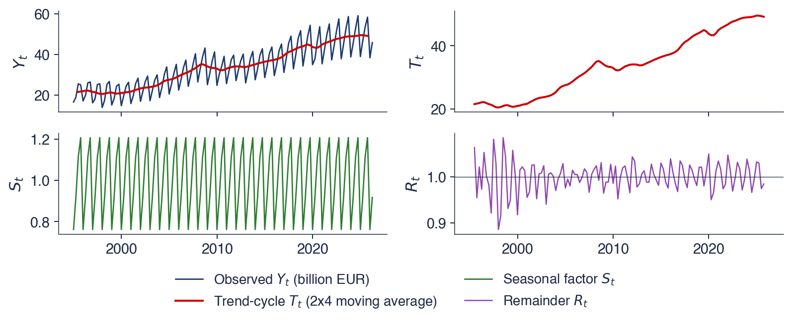
Descompunere clasică multiplicativă, \(m = 4\): seria observată și trend-ciclul, trend-ciclul, factorii sezonieri, componenta neregulată
Tabelul conține factorul sezonier estimat \(\hat S_q\) al fiecărui trimestru \(q\): 0,762 pentru T1, 0,918 pentru T2, 1,113 pentru T3 și 1,207 pentru T4. În procente față de trend, un trimestru I tipic se află cu 23,8% sub trend, un trimestru II tipic cu 8,2% sub trend, un trimestru III tipic cu 11,3% peste trend, iar un trimestru IV tipic cu 20,7% peste trend. Cei patru factori au media 1, așa cum cere normalizarea. Raportul lor, \(1{,}207 / 0{,}762\), arată că un trimestru IV este cu aproximativ 58% mai mare decît un trimestru I din motive pur sezoniere.
Componenta neregulată are o abatere standard de aproximativ 3,3%: într-un trimestru tipic, PIB-ul se abate cu aproximativ 3% de la produsul dintre trend și sezonalitate. Abaterile sînt mai mari în anii 1990 și în 2020, ani de turbulențe economice și de pandemie. Consecința practică privește ratele de creștere. Compararea unui trimestru cu trimestrul precedent al seriei neajustate amestecă creșterea cu oscilația sezonieră; un trimestru trebuie comparat cu același trimestru din anul anterior, sau comparația trebuie făcută pe seria ajustată sezonier.
Pe scurt
Trimestru
\(\hat S_q\)
față de trend
T1
0,762
\(\ensuremath{-}23{,}8\)%
T2
0,918
\(\ensuremath{-}8{,}2\)%
T3
1,113
\(+\)11,3%
T4
1,207
\(+\)20,7%
Citirea factorilor
\(\hat S_q\): factorul sezonier estimat al trimestrului \(q\)
un trimestru I tipic se află cu 23,8% sub trend, un trimestru IV tipic cu 20,7% peste trend
trimestrul IV este cu aproximativ 58% mai mare decît trimestrul I, din motive pur sezoniere
Componenta neregulată
abaterea standard este de aproximativ 3,3%; mai mare în anii 1990 și în 2020
Consecință: comparați un trimestru cu același trimestru din anul anterior, niciodată cu trimestrul precedent al seriei neajustate
STL (Seasonal and Trend decomposition using LOESS), descompunerea în sezonalitate și trend cu LOESS, a fost propusă de Cleveland et al. (1990). LOESS (locally estimated scatterplot smoothing) estimează o curbă netedă ajustînd, în jurul fiecărui punct, o regresie ponderată în care observațiile apropiate primesc ponderi mai mari. STL alternează două astfel de netezitoare: unul estimează componenta sezonieră din valorile aceluiași sezon în ani diferiți, celălalt estimează trendul din seria din care s-a eliminat sezonalitatea.
STL are trei avantaje față de metoda clasică. Tiparul sezonier se poate schimba lent de la un an la altul, pentru că fiecare sezon este netezit de-a lungul anilor, în loc să fie redus la un singur factor constant. Trendul este estimat pînă la ultima observație. Iar o variantă robustă dă ponderi mici valorilor extreme, astfel încît acestea ajung în componenta neregulată și nu deformează sezonalitatea sau trendul. Metoda are două limite: este doar aditivă, deci pentru serii multiplicative se aplică lui \(\ln y_t\), și nu tratează efectele de calendar, cum sînt numărul de zile lucrătoare sau data Paștelui. Institutele de statistică folosesc X-13ARIMA-SEATS sau TRAMO-SEATS, metode construite pe modele ARIMA, care includ efectele de calendar; ele sînt prezentate în Capitolul 4.
Pe scurt
STL: Seasonal and Trend decomposition using LOESS, descompunere în sezonalitate și trend cu LOESS (Cleveland et al. (1990))
LOESS (locally estimated scatterplot smoothing): o regresie ponderată, estimată în jurul fiecărui punct
Avantaje față de metoda clasică
tiparul sezonier se poate schimba lent de la un an la altul
o estimare a trendului pînă la ultima observație
o variantă robustă: valorile extreme ajung în componenta neregulată și nu deformează sezonalitatea
Limite
doar aditivă: pentru serii multiplicative se aplică lui \(\ln y_t\)
nu tratează efectele de calendar (zile lucrătoare, Paște)
Institutele de statistică folosesc X-13ARIMA-SEATS sau TRAMO-SEATS, metode construite pe modele ARIMA (Capitolul 4)
Graficul aplică o descompunere STL robustă, cu perioada 12, seriei lunare CO2. Cele patru panouri prezintă, de sus în jos, seria observată, trendul, componenta sezonieră și componenta neregulată, toate în ppm. Deoarece descompunerea este aditivă, cele patru panouri se adună: în fiecare lună, seria observată este egală cu trendul plus componenta sezonieră plus componenta neregulată.
Scările panourilor trebuie comparate înaintea formelor lor. Trendul acoperă aproximativ 55 ppm, componenta sezonieră cîțiva ppm, iar componenta neregulată mult sub un ppm. Descompunerea arată astfel dintr-o privire ce componentă domină variația seriei.
Pe scurt
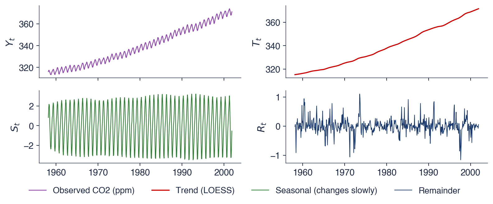
STL robustă cu perioada 12, pe seria lunară CO2: seria observată, trendul, sezonalitatea, componenta neregulată (ppm)
Trendul este neted și ușor convex: creșterea se accelerează pe parcursul eșantionului, așa cum sugera interpretarea seriei brute. Componenta sezonieră atinge maximul în mai și minimul în octombrie. Iarna și primăvara, descompunerea frunzelor căzute eliberează CO2, iar concentrația se acumulează; vara, fotosinteza îl absoarbe, iar concentrația scade pînă la sfîrșitul sezonului de vegetație.
Amplitudinea anuală a componentei sezoniere crește de la 4,9 ppm în 1959 la 6,3 ppm în 2001, o creștere de aproximativ 28%. În aceeași perioadă, nivelul a crescut cu aproximativ 17%, de la 316,1 la 371,0 ppm, deci creșterea undei nu este proporțională cu nivelul, iar nici o sezonalitate aditivă constantă, nici una multiplicativă nu o descriu exact. STL o surprinde pentru că permite modificarea sezonalității.
Componenta neregulată are o abatere standard de 0,25 ppm, mică în raport cu sezonalitatea: trendul și sezonalitatea explică aproape toată variația. Vîrfurile mai mari ale componentei neregulate merită verificate în istoricul stației, de exemplu întreruperi sau schimbări ale instrumentelor, înainte de a fi considerate zgomot.
Pe scurt
Trendul: neted, ușor convex: creșterea se accelerează
Sezonalitatea: maximul în mai, minimul în octombrie
iarna și primăvara: descompunerea frunzelor căzute eliberează CO2; vara: fotosinteza îl absoarbe
amplitudinea anuală crește de la 4,9 ppm (1959) la 6,3 ppm (2001): STL permite modificarea sezonalității
Componenta neregulată: abaterea standard 0,25 ppm
mică în raport cu sezonalitatea: trendul și sezonalitatea explică aproape totul
verificați vîrfurile mai mari în istoricul stației înainte de a le considera zgomot
O serie este descrisă prin trend, prin sezonalitate, care are o perioadă fixă, prin ciclu, care nu are, și prin componenta neregulată. Descompunerea este aditivă dacă oscilația sezonieră are o mărime constantă și multiplicativă dacă oscilația crește odată cu nivelul; logaritmul o transformă pe a doua în prima.
O medie mobilă centrată \(2 \times m\) elimină sezonalitatea și estimează trend-ciclul; media valorilor fără trend din fiecare sezon oferă factorii sezonieri. Pentru PIB-ul României, trimestrul I se află cu aproximativ 23,8% sub trend, iar trimestrul IV cu aproximativ 20,7% peste el. STL permite modificarea tiparului sezonier în timp și este robustă la valori extreme.
Pe scurt
Trend, sezonalitate (perioadă fixă), ciclu (fără perioadă fixă), componenta neregulată
Aditiv dacă oscilația sezonieră este constantă, multiplicativ dacă ea crește odată cu nivelul; logaritmul transformă un model în celălalt
O medie mobilă centrată \(2 \times m\) elimină sezonalitatea și estimează trend-ciclul
PIB-ul României: trimestrul I cu aproximativ 23,8% sub trend, trimestrul IV cu aproximativ 20,7% peste trend
STL permite modificarea tiparului sezonier și este robustă la valori extreme
Sinteza secțiunii
Descompunerea separă ceea ce se repetă cu o perioadă cunoscută de ceea ce evoluează lent și de ceea ce rămîne. Metoda clasică, bazată pe medii mobile, arată logica separării; STL renunță la ipoteza unei sezonalități fixe. Pentru prognoză, sezonalitatea este componenta cea mai sigură, iar ciclul cea mai nesigură. Secțiunea următoare introduce notația cursului și funcția de autocorelație, care detectează aceleași componente pe cale numerică.
Notație, transformări și ACF
Această secțiune fixează notația folosită în toate capitolele, introduce transformările care fac dintr-o serie cu trend și cu varianță variabilă o serie mai ușor de modelat și definește funcția de autocorelație de selecție (ACF, sample autocorrelation function). ACF măsoară cît de puternic este legată o serie de propriul trecut și recunoaște, după forma ei, trendul, sezonalitatea și absența memoriei.
Observația din momentul \(t\) este \(y_t\), pentru \(t = 1, \ldots, T\), iar media de selecție este \(\bar y = \frac{1}{T}\sum_t y_t\). Operatorul de întîrziere (lag operator) \(L\) deplasează seria cu o perioadă înapoi, \(L y_t = y_{t-1}\), iar puterile lui o deplasează mai mult, \(L^k y_t = y_{t-k}\). Scrierea deplasărilor ca operator transformă lagurile în algebră: modelele din Capitolul 2 sînt polinoame în \(L\).
Prima diferență (first difference) este \(\Delta y_t = y_t - y_{t-1}\), adică, în forma de operator, \(\Delta = 1 - L\). Diferența sezonieră (seasonal difference) este \(\Delta_m y_t = y_t - y_{t-m}\), cu \(\Delta_m = 1 - L^m\); pentru date trimestriale, \(\Delta_4 y_t\) compară un trimestru cu același trimestru din anul anterior. Prognoza lui \(y_{T+h}\) făcută cu datele pînă la \(T\) se notează \(\hat y_{T+h|T}\), unde \(h\) este orizontul (horizon), iar eroarea de prognoză este \(e_t = y_t - \hat y_t\). Notația \(\hat{\ }\) indică estimările și prognozele, iar literele grecești, cum sînt \(\phi\),\(\theta\) și \(\alpha\), marchează parametrii.
Pe scurt
Simbol
Semnificație
\(y_t\), \(t = 1, \ldots, T\)
observația din momentul \(t\); \(T\) observații în eșantion
\(\bar y = \frac1T \sum_t y_t\)
media de selecție
\(L y_t = y_{t-1}\)
operatorul lag: deplasează seria cu o perioadă înapoi; \(L^k y_t = y_{t-k}\)
\(\Delta y_t = y_t - y_{t-1}\)
diferența de ordinul întîi, \(\Delta = 1 - L\)
\(\Delta_m y_t = y_t - y_{t-m}\)
diferența sezonieră, \(\Delta_m = 1 - L^m\)
\(\hat y_{T+h|T}\)
prognoza lui \(y_{T+h}\) făcută cu datele pînă la \(T\); \(h\) este orizontul
Logaritmul \(\ln y_t\) stabilizează o varianță care crește odată cu nivelul: în logaritmi, un tipar multiplicativ devine aditiv, iar oscilațiile de procent constant devin oscilații de mărime constantă. Rata de creștere pe o perioadă este \(g_t = 100\,(y_t / y_{t-1} - 1)\). Pentru variații mici, ea este aproximată prin diferența logaritmilor, \(100\,\Delta \ln y_t \approx g_t\), deoarece \(\ln(1+x) \approx x\) pentru \(x\) mic. Rata anuală de creștere a unei serii trimestriale, \(100\,(y_t / y_{t-4} - 1)\), compară aceleași trimestre, deci sezonalitatea se anulează.
Exemplul rezolvat folosește PIB-ul României: 38,7 în T1 2024, 59,2 în T4 2024 și 38,9 în T1 2025. Pe un trimestru, \(100\,(38{,}9 / 59{,}2 - 1) \approx -34\%\): o scădere de o treime, care nu este o prăbușire a economiei, ci efectul iernii. Pe un an, \(100\,(38{,}9 / 38{,}7 - 1) \approx +0{,}5\%\): economia aproape nu a crescut. Aceeași observație dă două impresii opuse, în funcție de comparație, și doar rata anuală măsoară creșterea.
Pentru prețuri, transformarea standard este randamentul logaritmic (log return), \(r_t = 100\,(\ln P_t - \ln P_{t-1})\), în procente, unde \(P_t\) este prețul din ziua \(t\). Randamentele logaritmice se adună în timp: randamentul logaritmic pe o perioadă este suma randamentelor logaritmice zilnice din interiorul ei.
Pe scurt
Logaritmul\(\ln y_t\): stabilizează o varianță care crește odată cu nivelul
Rata de creștere pe o perioadă: \(g_t = 100\,(y_t / y_{t-1} - 1)\)
aproximarea logaritmică: \(100\,\Delta \ln y_t \approx g_t\) pentru variații mici
Rata anuală de creștere a unei serii trimestriale: \(100\,(y_t / y_{t-4} - 1)\)
compară aceleași trimestre, deci sezonalitatea se anulează
Exemplu rezolvat: PIB-ul României, T1 2024 = 38,7, T4 2024 = 59,2, T1 2025 = 38,9
pe un trimestru: \(100\,(38{,}9 / 59{,}2 - 1) \approx -34\%\): nu o prăbușire, ci doar iarna
pe un an: \(100\,(38{,}9 / 38{,}7 - 1) \approx +0{,}5\%\): economia aproape nu a crescut
Randamentul logaritmic al unui preț: \(r_t = 100\,(\ln P_t - \ln P_{t-1})\), în %; \(P_t\): prețul din ziua \(t\)
Panoul de sus prezintă valoarea de închidere a indicelui BET din 2000; panoul de jos prezintă randamentele lui logaritmice zilnice, în procente, pe 6 670 de zile de tranzacționare. Cele două panouri sînt aceleași date înainte și după transformarea \(r_t = 100\,\Delta \ln P_t\).
Panoul de sus are un trend, creșteri lungi și o scădere adîncă în 2008. Panoul de jos nu are niciuna dintre acestea: randamentele fluctuează în jurul lui zero, iar ceea ce se schimbă în timp este lățimea benzii în care se mișcă. Transformarea a mutat trăsătura interesantă a seriei de la nivel la varianță.
Pe scurt
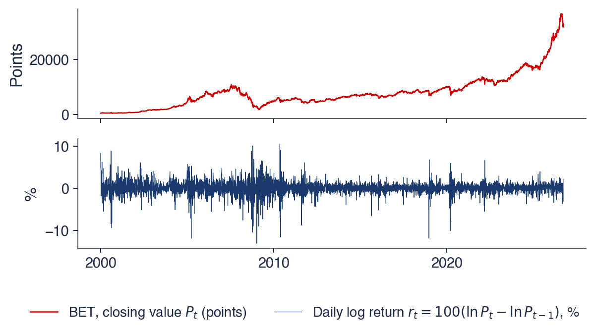
Sus: valoarea de închidere a indicelui BET din 2000; jos: randamentele logaritmice zilnice, în % (6 670 de zile de tranzacționare)
Prețul are trend; randamentele nu au. Randamentele zilnice fluctuează în jurul unei medii de 0,064%, cu o abatere standard de 1,40%, ceea ce corespunde unei volatilități de aproximativ 22% pe an, deoarece volatilitatea zilnică se anualizează cu factorul \(\sqrt{252} \approx 15{,}9\). Aditivitatea randamentelor logaritmice leagă media de creșterea din secțiunea despre datele reale: 6 670 de zile înmulțite cu 0,064% dau aproximativ 4,26, iar \(e^{4{,}26} \approx 71\), factorul cu care s-a înmulțit o investiție în BET.
Zilele extreme se află departe de medie: cea mai slabă a fost −13,1%, pe 7 ianuarie 2009, iar cea mai bună +10,6%, pe 10 mai 2010, ambele la peste șapte abateri standard. Perioadele calme alternează cu cele agitate: variațiile mari apar grupat în 2008–2010 și în martie 2020. Acest volatility clustering, tema Capitolului 5, înseamnă că mărimea variației de azi spune ceva despre mărimea variației de mîine.
Diferențierea logaritmului prețului elimină trendul. Majoritatea modelelor din curs se aplică unor astfel de serii transformate, a căror medie nu derivă, și apoi transpun prognozele înapoi pe scara inițială.
Pe scurt
Prețul are trend; randamentele nu au
randamentele fluctuează în jurul unei medii de 0,064% pe zi, cu abaterea standard de 1,40% (aproximativ 22% pe an)
Zile extreme
cea mai slabă: \(-\)13,1% pe 7 ianuarie 2009; cea mai bună: +10,6% pe 10 mai 2010
Perioadele calme alternează cu cele agitate
variațiile mari apar grupat în 2008–2010 și în martie 2020: volatility clustering (Capitolul 5)
Diferențierea logaritmului prețului elimină trendul: majoritatea modelelor din curs se aplică unor astfel de serii transformate
unde \(k\) este lagul, în perioade, iar \(\bar y\) media de selecție. Fiecare produs este pozitiv cînd \(y_t\) și \(y_{t-k}\) se află de aceeași parte a mediei și negativ în caz contrar, deci \(c_k\) este pozitiv cînd valorile aflate la \(k\) perioade distanță tind să fie amîndouă mari sau amîndouă mici. Împărțitorul este \(T\), nu \(T - k\); această alegere face ca autocovarianțele estimate să formeze o structură de covarianță validă.
Autocorelația de selecție este
\[r_k = \frac{c_k}{c_0},\]
(0.6)
unde \(c_0\) este varianța de selecție, adică autocovarianța la lagul 0; \(r_k\) se află între \(-1\) și \(1\). Funcția de autocorelație (ACF) este șirul \(r_1, r_2, \ldots\), reprezentat în funcție de \(k\) într-un grafic numit corelogramă (correlogram).
Corelograma se citește în raport cu banda de referință \(\pm 1{,}96/\sqrt{T}\), unde 1,96 este cuantila de 97,5% a distribuției Normale standard. Dacă seria ar fi un zgomot independent, fiecare \(r_k\) ar avea aproximativ distribuția Normală cu media 0 și abaterea standard \(1/\sqrt{T}\), iar aproximativ 95% dintre valorile \(r_k\) ar cădea în interiorul benzii. O valoare din afara benzii este un semn de dependență la acel lag; dintre multe laguri, aproximativ unul din douăzeci iese din bandă din întîmplare. Teoria din spatele benzii, cu staționaritatea, zgomotul alb (white noise) și testul Ljung–Box, urmează în Capitolul 1.
Pe scurt
Întrebarea: cît de puternic este legat \(y_t\) de propria valoare de acum \(k\) perioade?
\(k\): lagul, în perioade; \(\bar y\): media de selecție; produsul este pozitiv cînd \(y_t\) și \(y_{t-k}\) se află de aceeași parte a mediei
Autocorelația de selecție: \(r_k = c_k / c_0\), între \(-1\) și \(1\)
\(c_0\): varianța de selecție (autocovarianța la lagul 0)
ACF (autocorrelation function, funcția de autocorelație) este șirul \(r_1, r_2, \ldots\) reprezentat în funcție de \(k\) (corelograma)
Banda de referință\(\pm 1{,}96 / \sqrt{T}\)
dacă seria ar fi un zgomot independent, aproximativ 95% dintre valorile \(r_k\) ar cădea în interiorul ei; 1,96: cuantila de 97,5% a distribuției Normale standard
teoria (staționaritate, zgomot alb, testul Ljung–Box) urmează în Capitolul 1
Seria are \(T = 6\) valori: 2, 4, 3, 5, 4, 6. Suma lor este 24, deci \(\bar y = 4\), iar abaterile de la medie sînt \(-2, 0, -1, 1, 0, 2\). Suma pătratelor abaterilor este \(4 + 0 + 1 + 1 + 0 + 4 = 10\), deci \(c_0 = 10/6\). Produsele abaterilor consecutive, \((y_t - \bar y)(y_{t-1} - \bar y)\) pentru \(t = 2, \ldots, 6\), sînt \(0, 0, -1, 0, 0\), cu suma \(-1\), deci \(c_1 = -1/6\) și
\[r_1 = \frac{-1/6}{10/6} = -0{,}1.\]
La lagul 2, produsele asociază valori aflate la două perioade distanță: \((-1)(-2) + (1)(0) + (0)(-1) + (2)(1) = 4\), deci \(r_2 = 4/10 = 0{,}4\). Împărțitorul \(T\) se simplifică în raport, astfel încît \(r_k\) este pur și simplu suma produselor decalate împărțită la suma pătratelor.
Cu șase observații, banda este \(\pm 1{,}96/\sqrt{6} = \pm 0{,}80\). Ambele valori se află mult în interiorul ei, deci, după acest criteriu, niciuna nu se deosebește de 0. Exemplul arată de ce seriile scurte oferă puține dovezi despre dependență: o autocorelație de 0,4 este mare, dar cu șase observații se află în intervalul pe care îl produce un zgomot independent.
Graficul prezintă ACF de selecție pentru lagurile 1–36 a trei serii, cu banda \(\pm 1{,}96/\sqrt{T}\) colorată. Panoul din stînga este nivelul CO2, cel din centru producția lunară de electricitate, iar cel din dreapta randamentele logaritmice zilnice ale indicelui BET. Fiecare bară este un \(r_k\); axa orizontală este lagul \(k\), în luni pentru primele două serii și în zile de tranzacționare pentru a treia.
Cele trei panouri au fost alese pentru că arată cele trei forme tipice ale unei corelograme: o descreștere lentă, o undă cu vîrfuri la multiplii perioadei sezoniere și bare aproape toate apropiate de zero. Banda este îngustă pentru BET, pentru că \(T\) este mare, și mai largă pentru seriile lunare.
Pe scurt
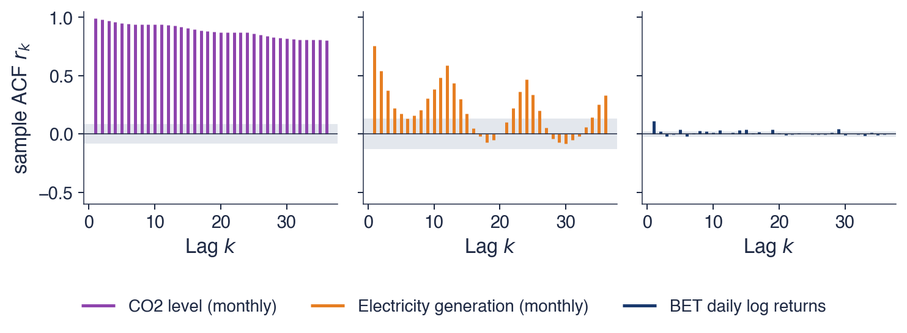
ACF de selecție pentru lagurile 1–36; zona colorată: banda \(\pm 1{,}96/\sqrt{T}\). Stînga: nivelul CO2; centru: producția lunară de electricitate; dreapta: randamentele logaritmice zilnice ale BET
Nivelul CO2 are \(r_1 = 0{,}993\) și încă 0,80 la lagul 36. O descreștere lentă, aproape liniară, este semnătura unui trend: valorile aflate la mare distanță în timp sînt toate de aceeași parte a mediei, sub ea la începutul eșantionului și deasupra ei la sfîrșit, deci nivelul rămîne corelat cu valorile de acum cîțiva ani. ACF a unui nivel cu trend este dominată de trend și spune puțin despre dinamica pe termen scurt.
Producția de electricitate are \(r_1 = 0{,}75\),\(r_6 = 0{,}13\) și \(r_{12} = 0{,}59\), cu vîrfuri la 12, 24 și 36 de luni: luna ianuarie de anul acesta seamănă cu ianuarie de anul trecut. Banda pentru această serie este de aproximativ \(\pm 0{,}13\), deci vîrfurile sezoniere sînt clar semnificative. Vîrfurile la multiplii perioadei \(m\) sînt semnătura sezonalității.
Randamentele BET aproape nu au memorie: \(r_1 = 0{,}109\),\(r_2 = 0{,}022\), față de o bandă de \(\pm 0{,}024\). Prima autocorelație este mică, dar semnificativă, iar 8 dintre cele 36 de laguri ies din bandă, mai mult decît cele unul sau două pe care le-ar produce un zgomot independent. Asemenea autocorelații sînt greu de exploatat după costurile de tranzacționare. Randamentele în valoare absolută au \(r_1 = 0{,}40\): mărimea variațiilor este previzibilă, semnul lor mult mai puțin, ceea ce înseamnă din nou volatility clustering (Capitolul 5). Regula generală este: întîi se transformă seria, apoi se examinează ACF.
Pe scurt
Trend: CO2, \(r_1 = \) 0,993, încă 0,80 la lagul 36
o descreștere lentă, aproape liniară, este semnătura unui trend: nivelul rămîne corelat cu valorile de acum cîțiva ani
Operatorul de întîrziere dă \(L y_t = y_{t-1}\), prima diferență este \(\Delta = 1 - L\), iar diferența sezonieră \(\Delta_m = 1 - L^m\);\(\hat y_{T+h|T}\) este prognoza pentru orizontul \(h\), făcută în momentul \(T\). Logaritmii stabilizează varianța, diferențele elimină trendul, iar ratele anuale elimină sezonalitatea.
Autocorelația de selecție \(r_k = c_k / c_0\) se compară cu banda \(\pm 1{,}96/\sqrt T\). Forma ei identifică componenta dominantă: o descreștere lentă indică un trend, vîrfurile la \(m, 2m, \ldots\) indică sezonalitatea, iar valorile toate apropiate de zero indică o memorie liniară redusă.
\(r_k = c_k / c_0\), comparat cu banda \(\pm 1{,}96/\sqrt T\)
Descreștere lentă: trend; vîrfuri la \(m, 2m, \ldots\): sezonalitate; toate aproape de 0: memorie liniară redusă
Sinteza secțiunii
Transformările și ACF sînt primele instrumente de diagnostic ale oricărei analize din curs. O serie cu trend sau cu varianță variabilă este transformată înainte de a fi modelată, iar corelograma seriei transformate arată ce dependență rămîne. Secțiunea următoare folosește dependența de trecutul recent pentru a construi primele metode de prognoză.
Netezirea exponențială
Netezirea exponențială (exponential smoothing) prognozează o serie prin medii ponderate ale valorilor ei trecute, în care ponderile scad geometric odată cu vechimea observației. Metodele au fost dezvoltate în industrie în anii 1950, pentru prognoza vînzărilor și a stocurilor, și rămîn printre cele mai precise metode simple de prognoză. Această secțiune derivă netezirea exponențială simplă (SES, simple exponential smoothing), arată rolul constantei de netezire pe seria EUR/RON și extinde metoda la trend și sezonalitate, cu metodele Holt și Holt–Winters.
unde \(\ell_t\) este nivelul netezit în momentul \(t\), iar \(\alpha\) constanta de netezire (smoothing constant). Rescrisă ca \(\ell_t = \ell_{t-1} + \alpha\,(y_t - \ell_{t-1})\), ecuația spune că nivelul se deplasează de la \(\ell_{t-1}\) spre noua observație cu fracțiunea \(\alpha\) din ultima eroare de prognoză. Prognoza pentru orice orizont este ultimul nivel, \(\hat y_{T+h|T} = \ell_T\), o dreaptă orizontală.
Denumirea provine din substituirea repetată a ecuației în ea însăși:
Ponderile scad geometric, ca o funcție exponențială de vechimea observației; cu \(\alpha = 0{,}5\), ele sînt 0,5; 0,25; 0,125 și așa mai departe, iar suma lor este 1.
Un \(\alpha\) mic împarte ponderea între multe valori trecute: metoda are o memorie lungă, prognozele ei sînt netede și reacționează lent la schimbări. Un \(\alpha\) mare concentrează ponderea pe valorile recente. Cu \(\alpha = 1\), nivelul este egal cu ultima observație, iar SES devine prognoza naivă, \(\hat y_{T+1} = y_T\). În practică, \(\alpha\) se estimează prin minimizarea sumei pătratelor erorilor de prognoză cu un pas înainte, pe întregul eșantion.
Pe scurt
Ideea: prognoza este o medie ponderată a trecutului, în care valorile recente au ponderi mai mari
\(\ell_t\): nivelul netezit în momentul \(t\); \(\alpha\): constanta de netezire; \(\ell_t\) se deplasează de la \(\ell_{t-1}\) spre \(y_t\) cu fracțiunea \(\alpha\)
prognoza pentru orice orizont: \(\hat y_{T+h|T} = \ell_T\), o dreaptă orizontală
Tabelul aplică (0.7) cu \(\alpha = 0{,}5\) pentru patru observații: 10, 12, 11 și 13. Nivelul inițial este prima observație, \(\ell_0 = 10\). La \(t = 1\), prognoza este \(\ell_0 = 10\), iar observația este 10, deci nivelul rămîne 10. La \(t = 2\), observația este 12, iar noul nivel este \(0{,}5 \times 12 + 0{,}5 \times 10 = 11\). La \(t = 3\), prognoza 11 este egală cu observația, deci nivelul rămîne 11. La \(t = 4\), nivelul devine \(0{,}5 \times 13 + 0{,}5 \times 11 = 12\).
Prognoza pentru \(t = 5\) și pentru toate perioadele următoare este 12: SES nu extrapolează trendul, ci doar urmărește nivelul. Erorile cu un pas sînt 0, 2, 0 și 2, toate nenegative: prognozele rămîn în urma datelor crescătoare. Erorile care își păstrează semnul sînt simptomul unui trend pe care metoda nu îl modelează și motivul extensiei lui Holt prezentate mai departe în această secțiune.
Pe scurt
\(t\)
\(y_t\)
\(\hat y_{t|t-1} = \ell_{t-1}\)
\(\ell_t = 0{,}5\,y_t + 0{,}5\,\ell_{t-1}\)
0
–
–
\(\ell_0 = 10\)
1
10
10
10
2
12
10
11
3
11
11
11
4
13
11
12
5
?
12
–
nivelul inițial \(\ell_0 = 10\) (prima observație)
Punctele din grafic sînt mediile lunare ale cursului de referință BNR, din ianuarie 2015 pînă în septembrie 2026. Cele două linii sînt prognoze SES cu un pas, \(\hat y_{t|t-1}\), fiecare calculată cu datele disponibile la sfîrșitul lunii anterioare, pentru două valori ale constantei de netezire: \(\alpha = 0{,}1\) și \(\alpha = 0{,}7\).
Graficul se citește comparînd fiecare linie cu punctele. O prognoză bună cu un pas rămîne aproape de punctul următor. O prognoză care rămîne sistematic sub puncte în timpul unei creșteri sau care are nevoie de multe luni pentru a ajunge la un nou nivel după un salt are prea multă memorie pentru această serie.
Pe scurt
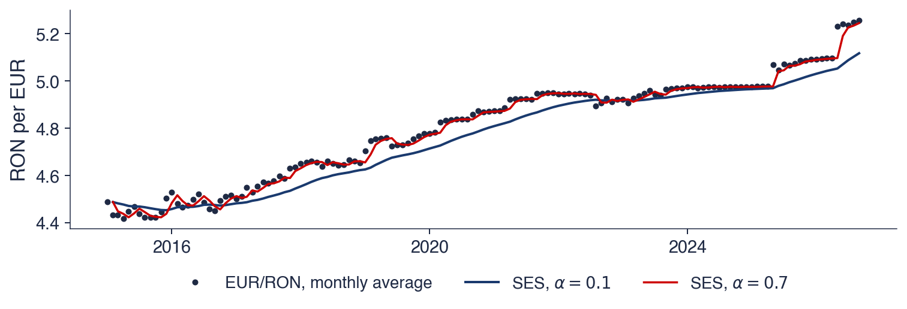
Puncte: mediile lunare ale cursului de referință BNR, ianuarie 2015 – septembrie 2026; linii: prognozele SES cu un pas, \(\hat y_{t|t-1}\), cu \(\alpha = 0{,}1\) și \(\alpha = 0{,}7\)
Cu \(\alpha = 0{,}1\), prognoza este netedă, dar mereu sub cursul crescător. Vechimea medie a observațiilor pe care le ponderează este \((1-\alpha)/\alpha = 9\) luni, deci ea ține seama de mai mulți ani de date, iar după saltul din 2025 are nevoie de multe luni pentru a ajunge la noul nivel. Cu \(\alpha = 0{,}7\), vechimea medie este sub o jumătate de lună: prognoza urmărește îndeaproape datele, cu o lună întîrziere.
Constanta de netezire estimată este \(\hat\alpha = 1{,}00\). Cea mai bună prognoză SES pentru luna viitoare este, așadar, media lunii curente, iar SES se reduce la prognoza naivă. Acest rezultat este tipic pentru cursurile de schimb și pentru prețuri: ultima valoare conține aproape toată informația despre următoarea, ca într-un mers aleator (random walk, Capitolul 1), iar media valorilor mai vechi adaugă doar informație depășită. O valoare estimată a lui \(\alpha\) apropiată de 1 este o informație despre serie, nu un eșec al metodei.
Pe scurt
\(\alpha = 0{,}1\): netedă, dar mereu sub cursul crescător
ponderează observații din mai mulți ani: după saltul din 2025 are nevoie de multe luni pentru a ajunge la noul nivel
\(\alpha = 0{,}7\): urmărește îndeaproape datele, cu o lună întîrziere
Valoarea estimată\(\hat\alpha = \) 1,00
cea mai bună prognoză SES pentru luna viitoare este media lunii curente: SES se reduce la prognoza naivă
tipic pentru cursurile de schimb și prețuri: ultima valoare conține aproape toată informația (un mers aleator, Capitolul 1)
O valoare estimată a lui \(\alpha\) apropiată de 1 este o informație despre serie, nu un eșec al metodei
Nivelul se actualizează spre \(y_t\) pornind de la nivelul anterior plus panta anterioară, adică de la locul unde era de așteptat să se afle seria. Panta \(b_t\) este variația estimată a nivelului pe perioadă; ea se actualizează spre ultima variație a nivelului, \(\ell_t - \ell_{t-1}\). Constanta \(\beta \in (0, 1]\) netezește panta: un \(\beta\) mic dă o pantă care se schimbă lent.
Prognoza este \(\hat y_{T+h|T} = \ell_T + h\, b_T\), ultimul nivel plus de \(h\) ori ultima pantă, adică o dreaptă. Dreptele extrapolate pe orizonturi lungi tind să depășească valorile realizate, pentru că trendurile rareori persistă neschimbate. Trendul amortizat (damped trend) înmulțește panta cu \(\phi^j\) la pasul \(j\), cu \(0 < \phi < 1\), astfel încît prognoza devine \(\ell_T + (\phi + \phi^2 + \cdots + \phi^h)\, b_T\) și se aplatizează pe măsură ce \(h\) crește.
unde \(s_{T+h-m}\) este ultimul factor sezonier al aceluiași sezon; un factor \(s = 1{,}1\) plasează sezonul cu 10% peste linia trendului. Fiecare componentă are propria constantă de netezire: \(\alpha\) pentru nivel, \(\beta\) pentru pantă și \(\gamma\) pentru sezonalitate. Forma multiplicativă se potrivește seriilor ca PIB-ul, a căror oscilație sezonieră crește odată cu nivelul; forma aditivă adună \(s_{T+h-m}\) în loc să înmulțească.
Hyndman, Koehler, Snyder & Grose (2002) au transformat aceste metode în modele statistice, familia ETS (Error, Trend, Seasonal: eroare, trend, sezonalitate). Fiecare componentă este notată N (none, absentă), A (aditivă), M (multiplicativă) sau A\(_d\) (aditivă amortizată); de exemplu, ETS(M,A\(_d\),M) are erori multiplicative, trend amortizat și sezonalitate multiplicativă. Deoarece fiecare metodă devine un model cu o funcție de verosimilitate, ea oferă intervale de prognoză și un criteriu informațional pentru alegerea între metode (Capitolul 2). Gardner (1985) face o sinteză a primilor 25 de ani de netezire exponențială.
Pe scurt
Holt–Winters (1960): adaugă factori sezonieri \(s_t\) cu perioada \(m\) (Winters (1960))
forma multiplicativă: \(\hat y_{T+h|T} = (\ell_T + h\, b_T)\, s_{T+h-m}\)
\(s_{T+h-m}\): ultimul factor sezonier al aceluiași sezon (pentru \(h \le m\)); \(s = 1{,}1\) înseamnă 10% peste linia trendului
fiecare componentă are propria constantă de netezire: \(\alpha\) (nivel), \(\beta\) (pantă), \(\gamma\) (sezonalitate)
fiecare metodă este un model statistic: N (none, absent), A (aditiv), M (multiplicativ), A\(_d\) (amortizat)
de exemplu, ETS(M,A\(_d\),M): erori multiplicative, trend amortizat, sezonalitate multiplicativă; oferă intervale de prognoză și un criteriu informațional (Capitolul 2)
O sinteză a 25 de ani de netezire exponențială: Gardner (1985)
SES actualizează nivelul prin \(\ell_t = \alpha y_t + (1-\alpha)\ell_{t-1}\). Ponderile ei pe observațiile trecute scad geometric, iar prognozele sînt orizontale. Un \(\alpha\) mic dă prognoze netede, care reacționează lent; \(\alpha = 1\) dă prognoza naivă.
Pentru cursul EUR/RON lunar, valoarea estimată \(\hat\alpha\) este 1,00, deci ultima valoare este cea mai bună prognoză SES. Holt adaugă un trend, iar Holt–Winters o sezonalitate, iar cadrul ETS transformă aceste metode în modele statistice cu intervale de prognoză.
EUR/RON: \(\hat\alpha = \) 1,00, ultima valoare este cea mai bună prognoză SES
Holt adaugă un trend, Holt–Winters o sezonalitate; ETS le transformă în modele statistice
Sinteza secțiunii
Netezirea exponențială prognozează prin medii ale trecutului cu ponderi geometrice, extinse cu o pantă și cu factori sezonieri cînd seria are trend și sezonalitate. Constanta de netezire estimată este ea însăși informativă: apropiată de 1 pentru cursurile de schimb, mai mică pentru seriile în care nivelul trebuie separat de zgomot. Secțiunea următoare arată cum se decide dacă asemenea prognoze sînt bune.
Prognoza și evaluarea ei
O prognoză este utilă doar dacă este mai bună decît o alternativă evidentă. Această secțiune definește cadrul prognozei, introduce patru metode de referință, explică de ce datele trebuie împărțite în timp într-un set de antrenare și un set de test și definește măsurile erorii. Apoi compară metodele pe producția de electricitate a României, prezintă competiția de prognoză M4 și organizează o mică competiție pe patru serii românești și climatice.
O prognoză \(\hat y_{T+h|T}\) este o afirmație despre valoarea \(y_{T+h}\), făcută în momentul \(T\). Ea poate folosi doar informația disponibilă în momentul \(T\), numită mulțimea de informație (information set); o prognoză care folosește date ulterioare, fie și indirect, nu este o prognoză. Orizontul \(h = 1, 2, \ldots\) numără perioadele de prognoză, iar incertitudinea crește odată cu \(h\), pentru că între \(T\) și \(T+h\) se acumulează mai multe șocuri neprevăzute.
O prognoză punctuală (point forecast) este un singur număr. O prognoză pe interval (interval forecast) este un interval care conține \(y_{T+h}\) cu o probabilitate stabilită, de exemplu 95%, și arată cît de multă încredere merită prognoza punctuală. Două condiții fac o serie previzibilă. Prima este un tipar stabil, ca în seria CO2, nu o evoluție determinată de știri, ca în cazul cursurilor de schimb. A doua este ca prognoza să nu modifice rezultatul: o prognoză meteo nu schimbă vremea, dar o prognoză a prețului publicată pentru milioane de participanți la piață schimbă prețul, pentru că aceștia tranzacționează pe baza ei.
Pe scurt
Prognoza\(\hat y_{T+h|T}\): o afirmație despre \(y_{T+h}\), făcută în momentul \(T\)
poate folosi doar informația disponibilă în momentul \(T\): mulțimea de informație
\(h = 1, 2, \ldots\): orizontul; incertitudinea crește odată cu \(h\)
Prognoze punctuale și prognoze pe interval
punctuală: un singur număr; pe interval: un interval care conține \(y_{T+h}\) cu o probabilitate stabilită (de exemplu, 95%)
Condițiile previzibilității
un tipar stabil (CO2), nu unul determinat de știri (cursurile de schimb)
o prognoză care nu modifică rezultatul: o prognoză a prețului publicată pentru milioane de participanți la piață schimbă prețul
Metoda mediei prognozează orice valoare viitoare prin media de selecție, \(\hat y_{T+h|T} = \bar y\): viitorul seamănă cu trecutul mediu. Metoda naivă (naive) folosește ultima valoare, \(\hat y_{T+h|T} = y_T\); ea este optimă pentru un mers aleator, modelul uzual al cursurilor de schimb și al prețurilor. Metoda naivă sezonieră (seasonal naive) repetă valoarea aceluiași sezon din perioada anterioară, \(\hat y_{T+h|T} = y_{T+h-m}\) pentru \(h \le m\): ianuarie viitor este egal cu ianuarie trecut. Ea este un reper puternic pentru seriile cu sezonalitate pronunțată.
Metoda cu derivă (drift) adaugă la ultima valoare variația medie pe perioadă din trecut,
ceea ce înseamnă prelungirea dreptei care unește prima și ultima observație. Fiecare dintre cele patru metode corespunde unui model simplu al seriei: fără dinamică, mers aleator, sezonalitate fixă, mers aleator cu derivă. Un model nou merită folosit doar dacă depășește aceste metode de referință (benchmarks) pe date pe care nu le-a văzut.
Pe scurt
Media: \(\hat y_{T+h|T} = \bar y\)
viitorul seamănă cu trecutul mediu
Naivă: \(\hat y_{T+h|T} = y_T\)
ultima valoare; optimă pentru un mers aleator (cursuri de schimb, prețuri)
Diagrama arată cum se împarte o serie pentru evaluare. Datele se împart în timp, niciodată aleator. Setul de antrenare (training set) conține primele observații și servește la alegerea și estimarea metodei; setul de test (test set) conține ultimele \(h\) observații, care sînt ținute ascunse și folosite doar pentru măsurarea erorilor. O împărțire aleatoare, ca în învățarea automată pe date transversale, ar plasa observații viitoare în setul de antrenare; modelul ar vedea astfel viitorul, iar erorile lui ar părea prea mici.
O singură împărțire oferă un singur eșantion de erori de prognoză, care poate să nu fie reprezentativ. Originea mobilă (rolling origin), numită și validare încrucișată pentru serii de timp (time series cross-validation), repetă exercițiul mutînd înainte originea prognozei: fiecare rînd al diagramei se antrenează pe un istoric mai lung și se testează pe perioadele următoare. Media erorilor pe toate originile oferă o estimare mai stabilă a acurateței.
Erorile pe setul de test sînt \(e_{T+j} = y_{T+j} - \hat y_{T+j|T}\), pentru \(j = 1, \ldots, h\). Eroarea absolută medie (MAE, mean absolute error) este
penalizează mai mult erorile mari, pentru că acestea sînt ridicate la pătrat; ea este întotdeauna cel puțin egală cu MAE, iar diferența dintre cele două crește cînd cîteva erori sînt mult mai mari decît restul.
Eroarea procentuală absolută medie (MAPE, mean absolute percentage error), \(\text{MAPE} = \frac{100}{h} \sum_j |e_{T+j} / y_{T+j}|\), nu are unități de măsură, deci poate compara serii măsurate în unități diferite, dar este inutilizabilă cînd \(y\) este aproape de 0, ca în cazul ratelor inflației sau al randamentelor, pentru că împărțirea explodează. Eroarea absolută medie scalată (MASE, mean absolute scaled error) a lui Hyndman & Koehler (2006) împarte MAE de pe setul de test la MAE în eșantion a metodei naive sezoniere:
Un MASE sub 1 înseamnă că erorile metodei sînt mai mici decît cele pe care metoda naivă sezonieră le-a făcut pe datele de antrenare. Deoarece nu are unități și nu împarte la \(y\), MASE este comparabil între serii.
Pe scurt
Erorile pe setul de test: \(e_{T+j} = y_{T+j} - \hat y_{T+j|T}\), \(j = 1, \ldots, h\)
Tabelul conține doi ani de date trimestriale de antrenare (10, 14, 18, 12 și 11, 15, 20, 13) și un al treilea an ca set de test (12, 16, 21, 14). Prognoza naivă repetă ultima valoare de antrenare, 13, pentru toate cele patru trimestre; erorile ei sînt \(-1, 3, 8, 1\). MAE este \((1 + 3 + 8 + 1)/4 = 3{,}25\), iar RMSE este \(\sqrt{(1 + 9 + 64 + 1)/4} = \sqrt{18{,}75} = 4{,}33\).
Prognoza naivă sezonieră repetă trimestrele anului 2: 11, 15, 20, 13. Erorile ei sînt toate egale cu 1, deci MAE = RMSE = 1. Prognoza naivă ignoră sezonalitatea: eroarea ei mare din trimestrul III, 8, contribuie cu 64 din cele 75 de unități ale sumei pătratelor și domină RMSE. Pentru datele sezoniere, metoda naivă sezonieră este reperul de depășit.
Graficul aplică patru metode producției de electricitate a României. Setul de test acoperă perioada august 2024 – iulie 2026, adică 24 de luni; datele de antrenare sînt toate lunile anterioare, începînd cu ianuarie 2008. Liniile întrerupte sînt prognoze făcute o singură dată, la sfîrșitul setului de antrenare, pentru toate cele 24 de luni ale setului de test, deci orizontul merge de la 1 la 24 de luni.
Metodele sînt prognoza naivă, prognoza naivă sezonieră, SES și Holt–Winters. Graficul se citește comparînd fiecare linie întreruptă cu seria observată în perioada de test: o linie orizontală nu poate urmări vîrfurile de iarnă, iar o copie a ultimului an urmărește sezonalitatea, dar nu și schimbarea nivelului.
Pe scurt
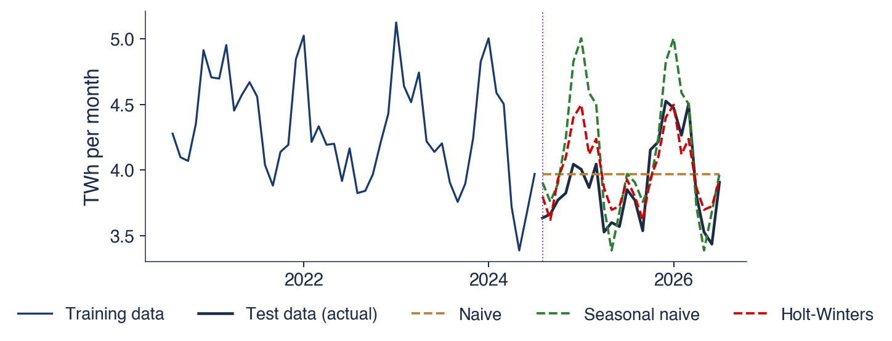
Setul de test: august 2024 – iulie 2026 (24 de luni); datele de antrenare: toate lunile anterioare; linii întrerupte: prognoze făcute o singură dată, la sfîrșitul setului de antrenare
Tabelul conține cele patru măsuri ale erorii pe setul de test; MAE și RMSE sînt exprimate în TWh pe lună. Metoda naivă are MAE 0,28, RMSE 0,33, MAPE 7,3% și MASE 0,82. Metoda naivă sezonieră are MAE 0,28, RMSE 0,38, MAPE 7,2% și MASE 0,83. SES are MAE 0,28, RMSE 0,32, MAPE 7,1% și MASE 0,81. Holt–Winters are MAE 0,17, RMSE 0,21, MAPE 4,5% și MASE 0,51.
Holt–Winters are cea mai mică eroare după fiecare măsură, pentru că combină nivelul în scădere cu vîrful de iarnă; MAE-ul ei este cu aproximativ 40% mai mic decît al celorlalte trei metode. Aici, metoda naivă sezonieră nu este mai bună decît cea naivă: ea copiază iarna puternică din 2023–2024 peste perioada 2024–2026, cu un nivel mai scăzut, iar RMSE-ul ei, 0,38, este cel mai mare dintre cele patru, semn al cîtorva erori mari în lunile de iarnă.
O perioadă de test de 24 de luni este un singur eșantion de erori de prognoză, dintr-o singură origine. O origine mobilă, cu multe perioade de test, oferă un răspuns mai solid despre metoda mai precisă pentru această serie.
Pe scurt
Metodă
MAE
RMSE
MAPE
MASE
Naivă
0,28
0,33
7,3%
0,82
Naivă sezonieră
0,28
0,38
7,2%
0,83
SES
0,28
0,32
7,1%
0,81
Holt–Winters
0,17
0,21
4,5%
0,51
MAE și RMSE în TWh pe lună
Holt–Winters are cea mai mică eroare după fiecare măsură
combină nivelul în scădere cu vîrful de iarnă
Aici, metoda naivă sezonieră nu este mai bună decît cea naivă
copiază iarna puternică din 2023–2024 peste perioada 2024–2026, cu un nivel mai scăzut
O singură perioadă de test de 24 de luni este un singur eșantion: o origine mobilă oferă un răspuns mai solid
Întrebarea din spatele competițiilor M este ce metode de prognoză funcționează cel mai bine pe date reale. Competițiile au fost inițiate de Spyros Makridakis în 1982. Organizarea lor elimină principalul risc al comparațiilor între metode: prognozele sînt trimise fără acces la datele de test și sînt evaluate de organizatori pe date de test ascunse.
Competiția M4, desfășurată în 2018, a folosit 100 000 de serii, de la anuale la orare, și a comparat 61 de metode (Makridakis, Spiliotis & Assimakopoulos, 2020). Douăsprezece dintre cele mai precise 17 metode au fost combinații de mai multe metode. Cîștigătoarea a fost o metodă hibridă, care combină netezirea exponențială cu o rețea neuronală. Metodele bazate exclusiv pe învățare automată au avut rezultate slabe: niciuna nu a depășit o combinație simplă de metode de netezire exponențială.
Pentru acest curs, lecțiile sînt metodologice. Metodele de referință vin întîi, acuratețea se măsoară în afara eșantionului, iar concluziile cer multe serii, nu una singură. Aceeași lecție apăruse și în M3 (Makridakis & Hibon, 2000): o metodă mai complexă nu este automat mai precisă.
Pe scurt
Întrebarea: ce metode de prognoză funcționează cel mai bine pe date reale?
competițiile M, inițiate de Spyros Makridakis în 1982: prognozele sînt trimise fără acces la datele de test și sînt evaluate pe acestea
12 dintre cele mai precise 17 metode au fost combinații de metode
cîștigătoarea a fost o metodă hibridă, care combină netezirea exponențială cu o rețea neuronală
metodele care folosesc exclusiv învățarea automată au avut rezultate slabe: niciuna nu a depășit o combinație simplă de metode de netezire exponențială
Relevanța pentru acest curs
întîi metodele de referință; acuratețea se măsoară în afara eșantionului, pe multe serii, nu pe una singură
aceeași lecție apăruse și în M3 (Makridakis & Hibon (2000)): o metodă complexă nu este automat mai bună
Graficul reproduce la scară mică logica competițiilor M: patru metode, prognoza naivă, prognoza naivă sezonieră, SES și Holt–Winters, pe patru serii sezoniere, PIB, IAPC, producția de electricitate și CO2. Seturile de test sînt ultimele 8 trimestre pentru PIB și ultimele 24 de luni pentru seriile lunare.
Fiecare bară este MASE-ul unei metode pe o serie, pe o scară logaritmică; linia întreruptă marchează MASE = 1. Deoarece MASE este scalat prin eroarea în eșantion a metodei naive sezoniere, barele unor serii diferite pot fi comparate direct. O bară sub linie înseamnă că metoda a prognozat setul de test mai bine decît a prognozat metoda naivă sezonieră datele de antrenare.
Pe scurt
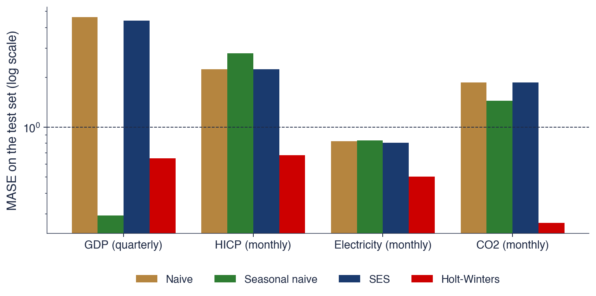
MASE pe setul de test (scară logaritmică) pentru patru metode și patru serii sezoniere; seturi de test: ultimele 8 trimestre (PIB) sau 24 de luni; linia întreruptă: MASE = 1
Holt–Winters cîștigă pe trei dintre cele patru serii. Pe CO2, MASE-ul ei este 0,26, față de 1,45 pentru metoda naivă sezonieră; pe IAPC este 0,68, față de 2,24 pentru metoda naivă. Pe electricitate, MASE-ul ei este 0,51, ca în comparația anterioară.
Pe PIB cîștigă metoda naivă sezonieră, cu un MASE de 0,29, față de 0,65 pentru Holt–Winters. Creșterea s-a oprit în 2025–2026, așa cum arăta rata anuală de creștere de 0,5% din T1 2025; trendul învățat de Holt–Winters din anii anteriori duce la prognoze prea mari, în timp ce metoda naivă sezonieră, care nu presupune nicio creștere, se dovedește mai apropiată de realitate. Metodele naivă și SES eșuează pe seriile sezoniere: pe PIB, MASE-ul lor este 4,62, respectiv 4,39, pentru că ignoră sezonalitatea și prognozează o dreaptă orizontală prin oscilația trimestrială.
Ca în M4, nicio metodă nu cîștigă peste tot, iar o metodă de referință simplă poate depăși un model aparent mai bun. Clasamentul depinde și de perioada de test: pe o altă porțiune a seriei PIB, trendul metodei Holt–Winters ar fi putut fi un avantaj.
Pe scurt
Holt–Winters cîștigă pe 3 din 4 serii
CO2: MASE 0,26, față de 1,45 pentru metoda naivă sezonieră; IAPC: 0,68, față de 2,24 pentru cea naivă
PIB: cîștigă metoda naivă sezonieră, MASE 0,29 față de 0,65
creșterea s-a oprit în 2025–2026: trendul estimat de Holt–Winters duce la prognoze prea mari
Metodele naivă și SES eșuează pe seriile sezoniere
PIB: MASE 4,62 (naivă) și 4,39 (SES): ignoră sezonalitatea
Ca în M4: nicio metodă nu cîștigă peste tot, iar o metodă de referință simplă poate depăși un model aparent mai bun
O prognoză \(\hat y_{T+h|T}\) folosește doar informația pînă la \(T\), iar incertitudinea ei crește odată cu orizontul \(h\). Metodele de referință sînt media, metoda naivă, metoda naivă sezonieră și metoda cu derivă; o metodă nouă trebuie să le depășească în afara eșantionului.
Datele se împart în timp, iar MAE, RMSE, MAPE și MASE se măsoară doar pe setul de test. Competiția M4 și mini-competiția pe date românești duc la aceeași concluzie: metodele simple sînt puternice, combinațiile și Holt–Winters au rezultate bune, iar nicio metodă nu cîștigă peste tot.
Pe scurt
\(\hat y_{T+h|T}\) folosește doar informația pînă la \(T\); incertitudinea crește odată cu \(h\)
Metode de referință: media, naivă, naivă sezonieră, cu derivă
Împărțiți datele în timp; măsurați MAE, RMSE, MAPE și MASE doar pe setul de test
M4 și mini-competiția noastră: metodele simple sînt puternice; combinațiile și Holt–Winters au rezultate bune
Sinteza secțiunii
Evaluarea prognozelor se sprijină pe trei reguli: împărțirea în timp, compararea cu metode de referință simple și măsurarea erorilor doar pe date pe care metoda nu le-a văzut. MASE face erorile comparabile între serii. Pe seriile acestui capitol, Holt–Winters este de obicei cea mai precisă metodă, dar pe PIB-ul României cîștigă prognoza naivă sezonieră, ceea ce amintește că un clasament obținut pe o singură perioadă de test este o dovadă, nu o certitudine.
Instrumente
Calculele cursului se fac în Python. Această secțiune enumeră bibliotecile folosite pe tot parcursul cursului și citește linie cu linie un prim script: el descarcă PIB-ul României, îl descompune, calculează ratele anuale de creștere și îl prognozează cu metoda Holt–Winters.
Cinci biblioteci acoperă cursul. NumPy oferă tablouri și algebră liniară (Harris et al., 2020). pandas oferă tabele indexate după dată, cu operații pentru schimbarea frecvenței, laguri și diferențe (McKinney, 2010). matplotlib desenează graficele. statsmodels implementează descompunerea, netezirea exponențială, modelele ARIMA și VAR și testele de rădăcină unitară (unit root) (Seabold & Perktold, 2010). Biblioteca arch estimează modelele GARCH din Capitolul 5.
Google Colab rulează notebook-uri în browser, fără nicio instalare. Un notebook al cursului se deschide cu un singur clic; meniul File → Save a copy in Drive păstrează o copie personală, cu modificările studentului. Fiecare grafic din slide-uri are un Quantlet al cărui cod rulează în Colab, deci fiecare rezultat al capitolului poate fi reprodus și modificat.
Scriptul citește PIB-ul real al României direct din API-ul Eurostat (application programming interface, interfață de programare a aplicațiilor), care nu cere o cheie de acces. Adresa URL selectează seria trimestrială a volumelor înlănțuite în prețurile anului 2010, neajustată, pentru România; valorile sosesc în milioane EUR și sînt împărțite la 1 000 pentru a obține miliarde EUR. Trimestrele devin un `PeriodIndex`, un indice de timp ale cărui elemente sînt perioade, nu date calendaristice, și sînt apoi transformate în momente de timp.
Restul scriptului repetă în patru linii pașii principali ai capitolului. `seasonal_decompose` cu `model='multiplicative'` și `period=4` efectuează descompunerea clasică multiplicativă din secțiunea despre componente, iar primele patru valori ale componentei sezoniere sînt factorii sezonieri ai celor patru trimestre. `y.shift(4)` dă valoarea aceluiași trimestru din anul anterior, deci `100 * (y / y.shift(4) - 1)` este rata anuală de creștere, în procente. `ExponentialSmoothing` cu trend aditiv și sezonalitate multiplicativă de perioadă 4 este metoda Holt–Winters din (0.9), iar `forecast(4)` întoarce prognozele pentru următoarele patru trimestre.
Pe scurt
import pandas as pd
from statsmodels.tsa.seasonal import seasonal_decompose
from statsmodels.tsa.holtwinters import ExponentialSmoothing
# Romanian real GDP, quarterly (Eurostat)
url = ('https://ec.europa.eu/eurostat/api/dissemination/'
'sdmx/2.1/data/namq_10_gdp/Q.CLV10_MEUR.NSA.B1GQ.RO'
'?format=SDMX-CSV')
t = pd.read_csv(url)
y = pd.Series(t['OBS_VALUE'].values / 1000,
index=pd.PeriodIndex(t['TIME_PERIOD'], freq='Q'))
y = y.to_timestamp()
dec = seasonal_decompose(y, model='multiplicative', period=4)
print(dec.seasonal.iloc[:4]) # seasonal factors
yoy = 100 * (y / y.shift(4) - 1) # annual growth, %
hw = ExponentialSmoothing(y, trend='add', seasonal='mul',
seasonal_periods=4).fit()
print(hw.forecast(4)) # next four quarters
Linie cu linie
citirea seriei direct din API-ul Eurostat (fără cheie)
PeriodIndex: trimestrele ca indice de timp
descompunere clasică multiplicativă, cu \(m = 4\)
shift(4): valoarea din același trimestru al anului anterior
Holt–Winters cu trend aditiv și sezonalitate multiplicativă
API (application programming interface): interfață de programare a aplicațiilor
Sinteza secțiunii
pandas, statsmodels și celelalte biblioteci ale cursului transformă fiecare metodă a acestui capitol într-una sau două linii de cod. Codul scurt ascunde însă ușor greșelile, de exemplu o deplasare cu un trimestru în loc de patru, de aceea fiecare rezultat trebuie citit în raport cu graficul și cu definițiile.
Contribuția posibilă a AI
Asistenții AI scriu rapid cod pentru serii de timp, adesea corect, dar unele greșeli sînt specifice seriilor de timp și trec ușor neobservate, pentru că și codul greșit rulează. Această secțiune enumeră situațiile în care un asistent ajută, greșelile care trebuie căutate și verificările care fac un rezultat demn de încredere.
Un asistent AI ajută în trei situații. Poate scrie o primă variantă a codului care citește o serie de la Eurostat sau de la BNR și o reprezintă grafic, partea muncii care cere cunoașterea interfețelor, nu a statisticii. Poate explica un mesaj de eroare sau argumentele unei funcții statsmodels. Și poate enumera explicațiile posibile ale unui tipar, de exemplu o scădere a PIB sau un salt al cursului EUR/RON, pe care analistul le verifică apoi în date și în istoria evenimentelor.
Unele greșeli revin frecvent în codul pentru serii de timp generat de AI. O împărțire aleatoare în set de antrenare și set de test îi permite modelului să vadă viitorul, deci erorile măsurate sînt prea mici. Creșterea pe un trimestru este numită „creștere anuală” sau se folosește `shift(1)` acolo unde este nevoie de `shift(4)`, ceea ce, pe PIB-ul neajustat, transformă scăderea sezonieră din trimestrul I într-o recesiune aparentă. RMSE este calculat fără rădăcina pătrată, iar MAPE este calculat pe o serie care trece prin zero. Exercițiul C2 din Seminarul 0 cere găsirea a trei astfel de greșeli într-un răspuns generat de AI.
Pe scurt
Unde ajută un asistent AI
o primă variantă a codului care citește și reprezintă grafic o serie Eurostat sau BNR
explicarea unui mesaj de eroare sau a unei funcții statsmodels
enumerarea explicațiilor posibile ale unui tipar (o scădere a PIB, un salt al cursului EUR/RON)
Greșeli frecvente în codul generat de AI pentru serii de timp
împărțirea aleatoare în set de antrenare și set de test, care îi permite modelului să vadă viitorul
creșterea pe un trimestru numită „creștere anuală”; shift(1) în loc de shift(4)
RMSE fără rădăcina pătrată; MAPE pe o serie care trece prin zero
Seminarul 0, exercițiul C2: găsiți trei astfel de greșeli într-un răspuns generat de AI
Verificările încep cu datele. Seria se reprezintă grafic înaintea oricărui calcul, iar frecvența, unitățile de măsură, prima și ultima dată se compară cu sursa. Analistul trebuie să știe și dacă seria este ajustată sezonier: un model pentru sezonalitate are nevoie de seria neajustată, pentru că din seria ajustată sezonalitatea a fost deja eliminată.
Urmează verificarea evaluării. Setul de test trebuie să vină după setul de antrenare și trebuie folosit o singură dată, la final; un set de test consultat în mod repetat în timpul alegerii metodei devine parte a datelor de antrenare. Înainte de a declara un succes, metoda se compară cu prognozele naivă și naivă sezonieră. În final, afirmațiile se verifică precum în politica privind AI: fiecare referință prin DOI-ul ei, fiecare rezultat numeric prin recalculare, iar fiecare utilizare a AI consemnată în fișierul de declarare.
Pe scurt
Datele
reprezentați seria grafic înainte de orice calcul; verificați frecvența, unitățile de măsură, prima și ultima dată
ajustată sau neajustată? Un model pentru sezonalitate are nevoie de seria neajustată
Evaluarea
setul de test urmează după setul de antrenare; se folosește o singură dată, la final
comparați cu prognozele naivă și naivă sezonieră înainte de a declara un succes
Afirmațiile: verificările din politica privind AI (referințe, rezultate numerice, AI_USE.md)
Sinteza secțiunii
Asistenții AI accelerează părțile de rutină ale muncii, dar greșelile care contează în seriile de timp, cum sînt scurgerile de informație din viitor, lagurile greșite și măsurile de eroare nepotrivite, produc cod care rulează și rezultate care par plauzibile. Verificările din această secțiune, împreună cu compararea cu metode de referință simple, fac un rezultat demn de încredere.
Concluzii
Capitolul a introdus obiectul cursului, tiparele pe care le conține și primele metode de descriere și de prognoză. Această secțiune reunește ideile principale, propune întrebări de autoevaluare și o idee de proiect și leagă capitolul de cel următor.
O serie de timp este ordonată în timp, iar dependența ei de trecut face posibilă prognoza. Ea este descrisă prin patru componente: un trend, o sezonalitate cu perioadă fixă, un ciclu fără perioadă fixă și o componentă neregulată; componentele se combină aditiv cînd oscilația sezonieră are o mărime constantă și multiplicativ cînd oscilația crește odată cu nivelul. Yule și Slutsky au găsit cele două mecanisme care generează valuri în date, dependența de valorile trecute și sumele șocurilor trecute, rădăcinile modelelor AR și MA.
ACF dezvăluie un trend printr-o descreștere lentă, o sezonalitate prin vîrfuri la multiplii lui \(m\), iar absența memoriei prin valori apropiate de zero. Netezirea exponențială dă o pondere mai mare trecutului recent, cu o pantă și cu factori sezonieri atunci cînd este nevoie. Fiecare prognoză trebuie evaluată față de metodele naive de referință, pe un set de test care urmează în timp după setul de antrenare.
Pe scurt
O serie de timp este ordonată în timp; dependența de trecut face posibilă prognoza
Componente: trend, sezonalitate (perioadă fixă), ciclu (fără perioadă fixă), componenta neregulată; aditiv sau multiplicativ
Yule și Slutsky: dependența și sumele de șocuri, originile modelelor AR și MA
ACF dezvăluie trendul (descreștere lentă), sezonalitatea (vîrfuri la \(m\)) și memoria
Netezirea exponențială acordă ponderi mai mari trecutului recent; evaluați orice prognoză față de metodele naive, pe un set de test
Autoevaluare, idee de proiect; urmează Capitolul 1
Cele patru întrebări de autoevaluare verifică ideile centrale ale capitolului. Prima, despre creșterea de la un trimestru la altul a PIB-ului neajustat, are răspunsul în exemplul rezolvat din secțiunea despre notație. A doua, despre semnificația unui factor sezonier de 0,76 pentru trimestrul I, are răspunsul în descompunerea PIB-ului. A treia, despre ce spune despre o serie o valoare estimată a lui \(\alpha\) apropiată de 1, are răspunsul în exemplul EUR/RON. A patra, despre motivul pentru care setul de test trebuie să urmeze după setul de antrenare, are răspunsul în secțiunea despre evaluarea prognozelor.
Ideea de proiect extinde exemplul electricității: prognoza producției lunare de electricitate a României cu un an înainte, comparînd metoda naivă sezonieră, Holt–Winters și STL urmată de SES pe seria ajustată sezonier, cu o origine mobilă în locul unei singure perioade de test. Capitolul 1 transformă instrumentele descriptive ale acestui capitol într-un cadru probabilist. El definește procesul stochastic, stabilește cînd o serie are o medie și o varianță stabile, introduce zgomotul alb și mersul aleator și arată cum se testează dacă autocorelațiile sînt nule.
Pe scurt
Autoevaluare
De ce este înșelătoare creșterea față de trimestrul anterior a PIB-ului neajustat?
Ce înseamnă un factor sezonier de 0,76 pentru trimestrul I?
Ce spune despre o serie o valoare estimată a lui \(\alpha\) apropiată de 1?
De ce trebuie ca setul de test să urmeze după setul de antrenare?
Idee de proiect
prognozați producția lunară de electricitate a României cu un an înainte; comparați metoda naivă sezonieră, Holt–Winters și STL urmată de SES, cu origine mobilă
Capitolul 1: procese stochastice și staționaritate
Ce este un proces stochastic?
Cînd are o serie medie și varianță stabile?
Ce sînt zgomotul alb și mersul aleator?
Cum testăm că autocorelațiile sînt nule?
Sinteza secțiunii
Instrumentele descriptive ale acestui capitol, descompunerea, ACF, netezirea exponențială și evaluarea prognozelor față de metode de referință, sînt folosite în toate capitolele următoare. Le lipsește un model probabilist care să explice de ce apar tiparele și cît de incerte sînt prognozele; acest model începe cu procesele stochastice din Capitolul 1.
Kolmogorov, A.N. (1941). Interpolation and extrapolation of stationary random sequences. English translation in Selected Works of A.N. Kolmogorov, Vol. II, Springer (1992), 272–280.
Box, G.E.P., Jenkins, G.M. (1970). Time Series Analysis: Forecasting and Control. Holden-Day; 4th ed. with G.C. Reinsel: https://doi.org/10.1002/9781118619193